pacman::p_load(tidyverse,corrplot, sf, sfdep, tmap, ggplot2, plotly, Kendall)Take Home Exercise 2: Impacts of COVID-19 on Thailand tourism economy at the province level using spatial and spatio-temporal statistics
1 Overview
1.1 Background
Tourism has long been one of the key pillars of Thailand’s economy, contributing significantly to the country’s gross domestic product (GDP). In 2019, prior to the COVID-19 pandemic, the tourism sector generated approximately 90 billion US dollars from domestic and international visitors, representing around 20% of the nation’s GDP. However, the pandemic severely impacted global travel and tourism, leading to a dramatic revenue decline to just 24 billion US dollars in 2020. The recovery of the tourism industry began gradually around September 2021, driven by both domestic reopening and the resumption of international travel.
Despite this gradual recovery, tourism income is not evenly distributed across the country. Thailand’s tourism economy is heavily concentrated in a few key provinces—Bangkok, Phuket, Chiang Mai, Sukhothai, and Phetchaburi—due to their cultural significance, economic importance, and tourism infrastructure. These provinces attract the bulk of visitors, while other areas benefit less from tourism activities. This uneven distribution raises questions about the spatial dependence and clustering of tourism-related economic indicators, which are of great interest to policymakers, economists, and urban planners aiming to foster more inclusive economic development through tourism.
With advancements in geospatial analytics, we can examine how economic patterns shift regionally and temporally. Understanding the spatial and spatio-temporal dynamics of tourism is critical for promoting equitable growth, improving infrastructure, and enhancing the resilience of local economies. By investigating these patterns, it becomes possible to detect clusters of tourism activity, emerging hot spots, and potential cold spots, allowing for more targeted interventions in the tourism sector.
1.2 Objectives
The primary goal of this analysis is to explore whether the key indicators of Thailand’s tourism economy demonstrate space and space and time dependence. Specifically, the objectives of this study are as follows:
Assess Space and Space and Time Independence: Investigate whether the tourism economy is independent of geographic space and time, or if there is significant clustering of economic activity in certain regions over specific time periods.
Identify Clusters and Outliers: If space and space and time dependence exists, detect the locations of clusters and outliers, identifying areas where tourism-related economic activity is abnormally high or low compared to neighboring regions.
Detect Emerging Hot Spots and Cold Spots: Conduct emerging hotspot analysis to determine areas where tourism activity is intensifying or declining over time, highlighting regions that may be experiencing rapid growth or a downturn in tourism-driven economic development.
1.3 Determining Tourism Economy Indicators
Total Revenue
We chose to use total revenue from the tourism sector (denoted as revenue_all) as our one of our indicator of interest because it serves as a comprehensive indicator of the economic impact of tourism on a region. Revenue from tourism is a direct reflection of the sector’s contribution to the local economy, by including spending from both domestic and international tourists across various services. By focusing on total revenue, we capture the aggregate demand generated by tourism, which is a critical driver of economic growth, employment, and infrastructure development within a province. Furthermore, revenue is a more stable and reliable measure compared to other variables like visitor count, as it accounts for variations in the types of tourists and the value of their spending. This makes it a more appropriate and meaningful variable to assess the overall economic benefits that tourism brings to the regions in our study.
Occupancy Rate
The occupancy rate (denoted as ratio_tourist_stay)is a critical indicator of tourism economy as it measures the percentage of available accommodations (e.g., hotels, guesthouses) that are occupied by tourists at a given time. A high occupancy rate suggests strong demand for tourist services and indicates a thriving tourism sector, which can positively affect related industries like hospitality, transportation, and local businesses. Tracking this variable allows for assessing seasonal variations in tourist flow.
Number of foreign tourists
The number of foreign tourists (denoted as no_tourist_foreign) visiting a province is another valuable indicator of tourism’s contribution to the economy. Foreign tourists typically bring in foreign currency, contributing to the province’s overall economic growth. They may also have different spending behaviors compared to domestic tourists, which could stimulate demand for luxury goods, international cuisine, or premium tourist experiences. Understanding the volume of foreign tourists also allows us to understand the impact of COVID-19 clearly.
2 Loading R Packages
The following packages were used for this study:
| Package | Description |
|---|---|
| tidyverse | For non-spatial data wrangling |
| corrplot | For correlation analysis among chosen variables |
| sf | For importing, managing, and handling geospatial data |
| sfdep | To derive tourism economy indicator layer |
| tmap | For visualizing maps |
| ggplot2 | To visualize other statistics |
| plotly | For interactive mapping |
| Kendall | For performing Mann Kendall test for emerging hotspot analysis |
3 Data Preparation
3.1 The Datasets
For the purpose of this analysis, two datasets are utilized to explore the spatial and spatio-temporal patterns of Thailand’s tourism economy.
- Thailand Domestic Tourism Statistics (version 2) from Kaggle, provides detailed tourism-related data such as monthly revenue receipts and visitor counts at the provincial level. This dataset is critical for analyzing economic trends within the tourism sector and identifying regional disparities in tourism activities across different provinces in Thailand.
- Thailand - Subnational Administrative Boundaries from the Humanitarian Data Exchange (HDX), provides geographic boundary data at the provincial level. This dataset offers the spatial context required for mapping and conducting spatial autocorrelation and hotspot analysis, linking tourism statistics to specific geographic regions across Thailand.
These datasets together enable a comprehensive geospatial analysis of the tourism economy, facilitating both spatial and temporal investigations into tourism clusters, outliers, and emerging hot spots or cold spots across Thailand’s provinces.
3.2 Import the Data
3.2.1 Aspatial Data
The Thailand Domestic Tourism Statistics dataset from 2019-2023, was imported by using read_csv() package.
Then, the data was prepared for analysis with the following steps:
pivot_wider()function was used to reshape the dataset by transforming the long format (multiple rows perdate&province_eng) into a wide format (one row perdate&province_engcombination). This transposes the variables and assign corresponding values in the cells.
tourism <- read_csv("data/rawdata/thailand_domestic_tourism_2019_2023_ver2.csv")%>%
pivot_wider(
names_from = variable,
values_from = value)We visualize which province contributes the highest tourism revenue to roughly understand areas where tourism is a key economic driver, providing more relevant insights into spatial and temporal tourism trends.
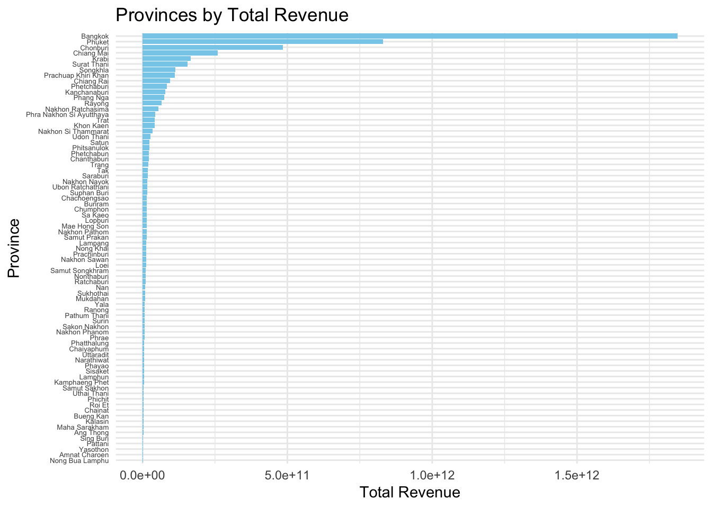
Here, we noted that revenue is quite skewed and unevenly distributed.
We will also see if there is any correlation among our three chosen tourism economy indicators.
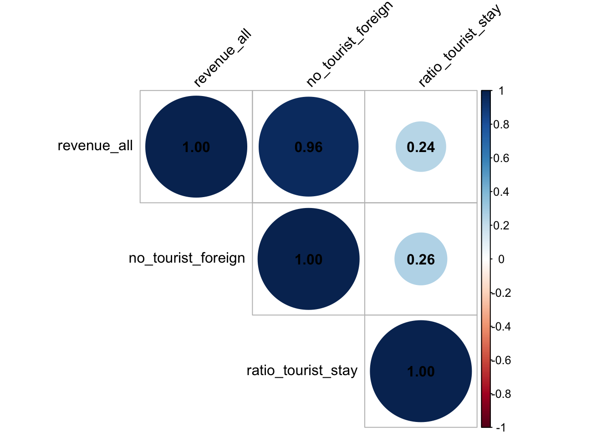
From viewing the correlation analysis, we see that revenue_all and no_tourist_foreign have a high correlation of 0.96. However, we will still choose no_tourist_foreign as one of our tourism economy indicators because the number of foreign tourists provides direct insights into international tourism demand and its influence on local economies. While highly correlated with revenue, no_tourist_foreign captures the volume of international visitors, which is crucial for understanding trends in foreign market engagement, the potential for tourism-driven economic policies, and the impact of external factors such as global travel restrictions.
We are now ready to select relevant rows in our dataset using select() as shown in code chunk below.
tourism <- tourism %>%
select(date, province_eng, ratio_tourist_stay, no_tourist_foreign, revenue_all)We will use glimpse() to quickly check the attributes.
glimpse(tourism)Rows: 3,850
Columns: 5
$ date <date> 2019-01-01, 2019-01-01, 2019-01-01, 2019-01-01, 20…
$ province_eng <chr> "Bangkok", "Lopburi", "Phra Nakhon Si Ayutthaya", "…
$ ratio_tourist_stay <dbl> 93.37, 61.32, 73.37, 67.33, 79.31, 71.70, 64.65, 71…
$ no_tourist_foreign <dbl> 2425014, 2363, 168776, 5836, 559, 11699, 248, 5281,…
$ revenue_all <dbl> 81926490000, 457240000, 1438730000, 347790000, 1017…Lastly, we will save the prepared dataframe into rds format.
write_rds(tourism, "data/rds/tourism.rds")tourism <- read_rds("data/rds/tourism.rds")3.2.2 Geospatial Data - Study Area
The Thailand - Subnational Administrative Boundaries dataset, was imported by using st_read() package.
The dataset was prepared for analysis with the following steps:
From a quick review of the dataset, variable ADM1_EN contains the provinces in Thailand. Since our analysis for this study is on provincial level, we will use this variable as a common variable to join with the tourism dataset. Therefore, we need to change the name of this variable to ‘province_eng’ to make it a common variable with the Tourism Statistics dataset.
We will use st_transform to reproject coordinate reference system to EPSG: 32647 for Thailand.
Change the spelling of some provinces such as Chon Buri to “Chonburi” to be the same as the way it was spelled in Tourism Statistics dataset.
thaibounds <- st_read(dsn = "data/rawdata/",
layer = "tha_admbnda_adm2_rtsd_20220121",
crs=4326) %>%
st_transform(crs=32647) %>%
rename(province_eng = ADM1_EN) %>%
select(-date)%>%
mutate(province_eng = ifelse(province_eng == "Chon Buri", "Chonburi", province_eng)) %>%
mutate(province_eng = ifelse(province_eng == "Lop Buri", "Lopburi", province_eng)) %>%
mutate(province_eng = ifelse(province_eng == "Chai Nat", "Chainat", province_eng)) %>%
mutate(province_eng = ifelse(province_eng == "Prachin Buri", "Prachinburi", province_eng))%>%
mutate(province_eng = ifelse(province_eng == "Buri Ram", "Buriram", province_eng))%>%
mutate(province_eng = ifelse(province_eng == "Si Sa Ket", "Sisaket", province_eng))%>%
mutate(province_eng = ifelse(province_eng == "Nong Bua Lam Phu", "Nong Bua Lamphu", province_eng))%>%
mutate(province_eng = ifelse(province_eng == "Phangnga", "Phang Nga", province_eng))write_rds(thaibounds, "data/rds/thaibounds.rds")thaibounds <- read_rds("data/rds/thaibounds.rds")3.2.3 Creating Tourism Economy Indicators Layer
Next, we will create a tourism economy indicators layer by left joining the geospatial dataframe (thaibounds) to the attribute dataframe (tourism) by using left_join().
To perform a left_join(), we must ensure that there is a common column between the two. For our case, the common column is ‘province_eng’
thai_tourism <- left_join(thaibounds,tourism)%>%
select(1:2, 11, 19:23)Then, to check whether the correct columns are present and the output thai_tourism is properly joined, we will be viewing the data content using glimpse().
glimpse(thai_tourism)Rows: 46,400
Columns: 8
$ Shape_Leng <dbl> 0.08541733, 0.08541733, 0.08541733, 0.08541733, 0.0…
$ Shape_Area <dbl> 0.0004504685, 0.0004504685, 0.0004504685, 0.0004504…
$ province_eng <chr> "Bangkok", "Bangkok", "Bangkok", "Bangkok", "Bangko…
$ date <date> 2019-01-01, 2020-01-01, 2021-01-01, 2022-01-01, 20…
$ ratio_tourist_stay <dbl> 93.37, 89.36, 7.54, 26.34, 75.02, 89.19, 68.37, 9.9…
$ no_tourist_foreign <dbl> 2425014, 2473725, 49154, 137591, 2122201, 2291482, …
$ revenue_all <dbl> 81926490000, 88202890000, 9539730000, 11823610000, …
$ geometry <MULTIPOLYGON [m]> MULTIPOLYGON (((662263.2 15..., MULTIP…Now that we see the dataset is prepared, we will save it in rds format.
write_rds(thai_tourism, "data/rds/thai_tourism.rds")thai_tourism <- read_rds("data/rds/thai_tourism.rds")3.2.4 Derived Tourism Economy Indicators Layer in spacetime
Lastly, for our emerging hotspot analysis in later sections, we will have to derive a study area layer in spacetime s3 class of sfdep.
We use the
sfdep package over spdep in this study due to its enhanced functionality and flexibility in handling modern spatial data formats, particularly sf (simple features) objects. Unlike spdep, which requires more manual steps to manage spatial objects and coordinate systems, sfdep seamlessly integrates spatial data processing with sf objects, making it more appropriate for our study’s workflow.
To convert the data into spacetime format, we will take the following steps:
We need to convert date field to integer, lubridated with the format YYYYMM as ‘201901’.
tourism <- tourism %>% mutate(date_int = year(date) * 100 + month(date))Since each province should only have one geometry (e.g., one polygon representing the whole province) we will aggregate thaibounds dataframe using st_union() and to convert all geometry types to be POLYGON in unison.
thaibounds_agg <- thaibounds %>% group_by(province_eng) %>% summarise(geometry = st_union(geometry))%>% mutate(geometry = st_cast(geometry, "POLYGON"))write_rds(thaibounds_agg, "data/rds/thaibounds_agg.rds")Lastly, we convert it into a
spacetimestructure with spacetime() fromsfdepwith the following code chunk.tourism_spt <- spacetime( .data = tourism, .geometry = thaibounds_agg, .loc_col = "province_eng", .time_col = "date_int" )To verify if tourism_spt is space-time cube object we use the is_spacetime_cube() code chunk below.
is_spacetime_cube(tourism_spt)[1] TRUE
4 Independence of Thailand’s Tourism Economy Indicators from Space
4.1 Global Spatial Autocorrelation Analysis
Global Spatial Autocorrelation Analysis is a crucial method for examining the spatial dependence of economic variables, such as tourism revenue, across different regions. It tests whether the distribution of variables such as total revenue, is randomly dispersed, clustered, or exhibits a pattern based on the geographical arrangement of locations.
In this study, we apply Global Spatial Autocorrelation, specifically Moran’s I, to investigate whether the tourism economy in Thailand is spatially independent or if neighboring provinces tend to have similar or dissimilar levels of tourism activity for the three economy indicators. A significant positive spatial autocorrelation would indicate clustering of similar tourism levels across provinces, while negative autocorrelation suggests dissimilar values are adjacent to one another.
4.1.1 Method Overview
We will use the K-nearest neighbors (KNN) approach for computing distance-based spatial weights in our analysis of tourism economy indicators across provinces because it is the most suitable to capture local interactions among neighboring provinces, especially since the data from our chosen economy indicators are skewed. By selecting a fixed number of nearest neighbors, KNN allows us to identify patterns and relationships within the tourism data that are particularly relevant to local contexts.
On the other hand, contiguity weights, which focus on shared borders between regions, are not appropriate in this scenario because the provinces in Thailand may have significant tourism interactions even if they are not geographically adjacent. Given that tourism flows can transcend physical boundaries and depend on accessibility rather than mere contiguity, KNN provides a more relevant method for capturing the spatial relationships critical to our analysis of the tourism economy.
Lastly, we will use the computed KNN weights to test for independence and perform Moran I’s on our chosen indicators of tourism economy.
4.1.2 K-nearest neighbors (KNN)
To find the K-nearest neighbor distance we will take the following steps:
First, we will extract the centroids of the
thai_tourismfor each province to get the coordinates for distance calculation. To overcome the issue of having multiple points for each location in thethai_tourismdataset (since it is a result of left join), we will now aggregate the data grouped by only province since we are not interested in time aspect here; just distance. We average ratio_tourist_stay since it is in percentage.agg_tourism_prov <- thai_tourism %>% group_by(province_eng) %>% summarize( revenue_all = sum(revenue_all, na.rm = TRUE), ratio_tourist_stay = mean(ratio_tourist_stay, na.rm = TRUE), no_tourist_foreign = sum(no_tourist_foreign, na.rm = TRUE), geometry = st_union(geometry) )We extract unique locations by using the
province_engcolumn to ensure each province has a single point (centroid). Then, we compute centroids for the unique provinces usingst_centroid()with the code chunk below.province_centroids <- agg_tourism_prov %>% st_centroid() %>% select(province_eng, geometry)To ensure the centroids are in proper locations and not located in the water
tmap_mode('plot') tm_shape(thaibounds) + tm_fill(col = "lightgrey") + tm_borders() + tm_shape(province_centroids) + tm_dots(col = "blue", size = 0.2, title = "Province Centroids") + tm_text("province_eng", size = 0.7, just = "top", col = "black") + tm_layout(main.title = "Province Centroids of Thai Tourism", main.title.size = 0.5)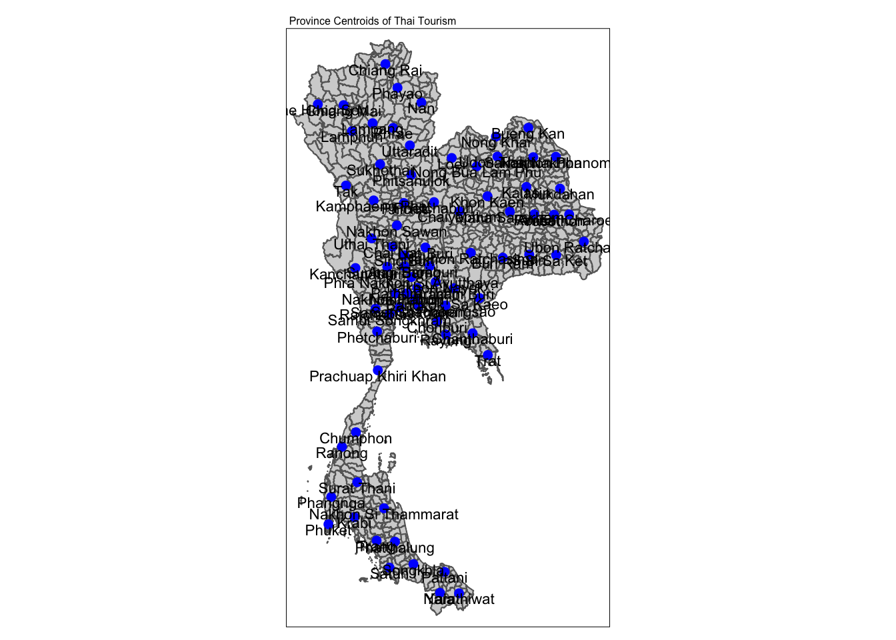
After ensuring the centroids are in proper locations,we convert centroids to coordinates.
coords <- st_coordinates(province_centroids)Compute adaptive distance weight matrix with k set at 6 neighbors using st_knn() from sfdep and view the structure of the matrix
knn <- st_knn(province_centroids, k = 6)str(knn)List of 77
$ : int [1:6] 14 25 54 62 72 77
$ : int [1:6] 7 37 46 60 63 66
$ : int [1:6] 27 36 37 46 57 58
$ : int [1:6] 14 28 34 35 56 73
$ : int [1:6] 24 29 54 55 62 68
$ : int [1:6] 3 12 26 49 53 57
$ : int [1:6] 2 22 30 63 66 74
$ : int [1:6] 17 22 24 29 34 42
$ : int [1:6] 6 12 49 53 55 71
$ : int [1:6] 11 19 20 23 41 47
$ : int [1:6] 10 19 20 32 41 47
$ : int [1:6] 3 6 9 49 53 57
$ : int [1:6] 18 31 39 50 51 67
$ : int [1:6] 17 24 25 54 56 77
$ : int [1:6] 30 44 45 65 69 74
$ : int [1:6] 2 7 27 52 66 74
$ : int [1:6] 8 14 24 34 54 73
$ : int [1:6] 31 39 40 48 67 70
$ : int [1:6] 10 20 41 47 65 75
$ : int [1:6] 10 19 23 47 65 69
$ : int [1:6] 34 35 42 45 73 75
$ : int [1:6] 2 7 26 46 60 63
$ : int [1:6] 10 11 19 20 41 47
$ : int [1:6] 5 14 17 54 68 77
$ : int [1:6] 1 14 28 54 56 77
$ : int [1:6] 3 6 37 46 49 60
$ : int [1:6] 3 36 37 46 58 59
$ : int [1:6] 4 14 25 56 73 77
$ : int [1:6] 5 8 22 26 49 60
$ : int [1:6] 7 15 22 44 63 74
$ : int [1:6] 18 39 40 48 67 70
$ : int [1:6] 11 19 21 41 47 75
$ : int [1:6] 38 40 61 64 70 76
$ : int [1:6] 8 14 17 21 35 73
$ : int [1:6] 4 14 21 34 56 73
$ : int [1:6] 3 27 37 46 57 58
$ : int [1:6] 3 26 27 36 46 57
$ : int [1:6] 33 40 61 64 70 76
$ : int [1:6] 18 31 48 51 67 70
$ : int [1:6] 18 31 38 61 64 70
$ : int [1:6] 10 11 19 32 47 75
$ : int [1:6] 8 21 22 30 44 45
$ : int [1:6] 27 36 50 52 58 59
$ : int [1:6] 7 15 30 42 45 65
$ : int [1:6] 15 21 42 44 65 75
$ : int [1:6] 2 3 27 36 37 60
$ : int [1:6] 19 20 32 41 65 75
$ : int [1:6] 18 31 39 40 67 70
$ : int [1:6] 6 12 26 37 55 60
$ : int [1:6] 13 43 52 57 58 59
$ : int [1:6] 13 18 31 39 48 67
$ : int [1:6] 3 27 36 43 58 59
$ : int [1:6] 3 6 9 12 57 71
$ : int [1:6] 1 14 24 25 68 77
$ : int [1:6] 5 6 9 26 29 49
$ : int [1:6] 4 14 25 28 35 73
$ : int [1:6] 3 12 27 36 37 58
$ : int [1:6] 3 27 36 52 57 59
$ : int [1:6] 3 27 36 43 52 58
$ : int [1:6] 2 22 26 37 46 63
$ : int [1:6] 31 38 40 64 70 76
$ : int [1:6] 1 5 54 68 72 77
$ : int [1:6] 2 7 22 46 60 66
$ : int [1:6] 33 38 40 61 70 76
$ : int [1:6] 15 19 45 47 69 75
$ : int [1:6] 2 7 16 27 46 63
$ : int [1:6] 13 18 31 39 48 51
$ : int [1:6] 5 24 54 62 72 77
$ : int [1:6] 15 20 30 44 65 74
$ : int [1:6] 18 31 40 48 61 64
$ : int [1:6] 6 9 12 49 53 55
$ : int [1:6] 1 25 54 62 68 77
$ : int [1:6] 4 14 17 34 35 56
$ : int [1:6] 7 15 16 30 63 66
$ : int [1:6] 19 21 32 45 47 65
$ : int [1:6] 33 38 40 61 64 70
$ : int [1:6] 1 14 25 54 62 72
- attr(*, "region.id")= chr [1:77] "1" "2" "3" "4" ...
- attr(*, "call")= language spdep::knearneigh(x = pnts, k = k)
- attr(*, "sym")= logi FALSE
- attr(*, "type")= chr "knn"
- attr(*, "knn-k")= num 6
- attr(*, "class")= chr [1:2] "nb" "list"Lastly we compute the KNN distance matrix weights using st_weights() from sfdep with the code chunk below.
knn_weights <- st_weights(knn, style = "W")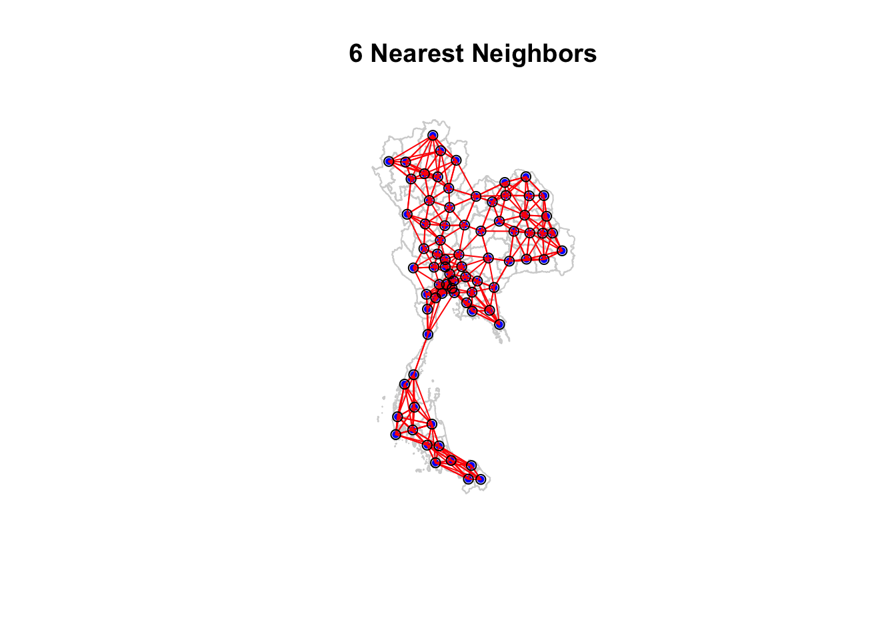
4.1.3 Performing Global Moran’s I
Now that we have the KNN weights ready, we can perform global spatial autocorrelation analysis.
To measure the degree to which similar or dissimilar values are clustered in space, we will performing Global Moran’s I. If the indicators are independent of space, Moran’s I should show no significant spatial autocorrelation. The following is the hypothesis that we would like to test.
Null Hypothesis (H0): The tourism economy indicators are spatially independent (randomly distributed in space).
Alternative Hypothesis (H1) : There is spatial dependence, indicating that similar values are clustered or dispersed.
The 95% confident interval will be used. (Significance level of 0.05)
We will use global_moran() function from sfdep package to compute the Global Moran’s I value for our three chosen indicator of tourism economy.
global_moran(agg_tourism_prov$revenue_all,
knn,
knn_weights)$I
[1] -0.02579891
$K
[1] 73.48954The Moran’s I value is negative and close to zero, indicating a slight tendency toward spatial dispersion or randomness. However, since the value is small, this suggests that the revenue distribution does not show strong evidence of spatial clustering or dispersion. It is likely that revenue values are fairly random across provinces.
global_moran(agg_tourism_prov$ratio_tourist_stay,
knn,
knn_weights)$I
[1] -0.08109265
$K
[1] 10.7366The Moran’s I value is also negative, meaning that areas with high occupancy rates tend to be randomn. The value is slightly higher than revenue’s indicating a slightly higher spatial autocorrelation.
global_moran(agg_tourism_prov$no_tourist_foreign,
knn,
knn_weights)$I
[1] -0.01733206
$K
[1] 73.06272The Moran’s I value for the number of foreign tourists is also negative but very close to zero, indicating little spatial autocorrelation. This suggests that the spatial distribution of foreign tourists across provinces is relatively random, with no strong evidence of clustering or dispersion.
Then Moran’s I test will be performed using global_moran_test() to understand deeper with a p-value.
global_moran_test(agg_tourism_prov$revenue_all,
knn,
knn_weights)
Moran I test under randomisation
data: x
weights: listw
Moran I statistic standard deviate = -1.2705, p-value = 0.898
alternative hypothesis: greater
sample estimates:
Moran I statistic Expectation Variance
-2.579891e-02 -1.315789e-02 9.900216e-05 Since the p-value (0.898) is greater than 0.05, we fail to reject the null hypothesis.
global_moran_test(agg_tourism_prov$ratio_tourist_stay,
knn,
knn_weights)
Moran I test under randomisation
data: x
weights: listw
Moran I statistic standard deviate = -1.2199, p-value = 0.8887
alternative hypothesis: greater
sample estimates:
Moran I statistic Expectation Variance
-0.081092653 -0.013157895 0.003101321 Since the p-value (0.8887) is greater than 0.05, we fail to reject the null hypothesis, meaning that it is spatially independent (randomly distributed in space) for occupancy rate as well.
global_moran_test(agg_tourism_prov$no_tourist_foreign,
knn,
knn_weights)
Moran I test under randomisation
data: x
weights: listw
Moran I statistic standard deviate = -0.38197, p-value = 0.6488
alternative hypothesis: greater
sample estimates:
Moran I statistic Expectation Variance
-0.0173320551 -0.0131578947 0.0001194228 Since the p-value (0.6488) is greater than 0.05, we fail to reject the null hypothesis.
This indicates that there is no significant spatial autocorrelation in all three chosen indicators and the distribution is random.
To confirm this conclusion, we will perform the statistical test with Monte Carlo simulation, using the global_moran_perm() as shown in the code chunk below.
First, we will set the seed at a random number.
set.seed(1234)global_moran_perm(agg_tourism_prov$revenue_all,
knn,
knn_weights,
nsim = 99)
Monte-Carlo simulation of Moran I
data: x
weights: listw
number of simulations + 1: 100
statistic = -0.025799, observed rank = 7, p-value = 0.14
alternative hypothesis: two.sidedSince the p-value (0.14) is greater than 0.05, we fail to reject the null hypothesis.
global_moran_perm(agg_tourism_prov$ratio_tourist_stay,
knn,
knn_weights,
nsim = 99)
Monte-Carlo simulation of Moran I
data: x
weights: listw
number of simulations + 1: 100
statistic = -0.081093, observed rank = 10, p-value = 0.2
alternative hypothesis: two.sidedThe p-value (0.2) is also greater than 0.05, leading us to fail to reject the null hypothesis.
global_moran_perm(agg_tourism_prov$no_tourist_foreign,
knn,
knn_weights,
nsim = 99)
Monte-Carlo simulation of Moran I
data: x
weights: listw
number of simulations + 1: 100
statistic = -0.017332, observed rank = 36, p-value = 0.72
alternative hypothesis: two.sidedThe p-value (0.72) is substantially greater than 0.05, resulting in a failure to reject the null hypothesis.
For all the indicators, the Monte Carlo simulations reinforce the earlier conclusions, showing no significant spatial autocorrelation. This suggests that for all three variables, there is no significant spatial autocorrelation present, and their distributions appear to be random rather than clustered or dispersed.
4.2 Local Spatial Autocorrelation Analysis
Local Moran’s I, also known as Local Indicator of Spatial Association (LISA), is a spatial statistical measure used to identify clusters or spatial autocorrelation at a local level (provinces), rather than globally. While Global Moran’s I evaluates the overall spatial autocorrelation across a dataset, Local Moran’s I detects significant pockets of clustering (high-high or low-low) or outliers (high-low or low-high) by evaluating each individual observation and its relationship to neighboring observations. This test helps pinpoint areas where spatial autocorrelation may differ significantly from the global trend.
Null hypothesis (H0): there is no local spatial autocorrelation, meaning the observed value at each province is independent of the values at neighboring provinces.
Alternative hypothesis (H1) is that there is local spatial autocorrelation, indicating that similar values are spatially clustered together or dispersed in specific areas.
4.2.1 Computing Local Moran’s I for Total Revenue
rev_local_moranI <- local_moran(agg_tourism_prov$revenue_all,
knn,
knn_weights,
nsim = 999)
rev_lisa_df <- as.data.frame(rev_local_moranI)
rev_tourism_lisa <- agg_tourism_prov %>%
mutate(ii = rev_lisa_df$ii,
p_ii_sim = rev_lisa_df$p_ii_sim,
p_ii = rev_lisa_df$p_ii,
mean = rev_lisa_df$mean,
.before = 1)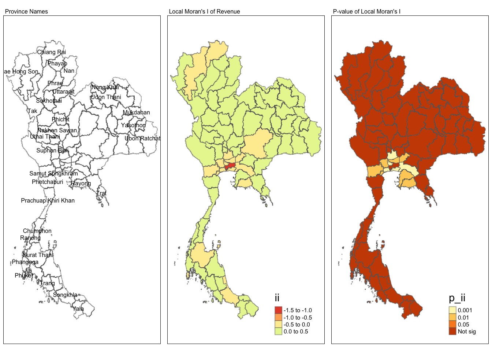
Local Moran’s I of Revenue: Bangkok exhibit the strongest negative spatial autocorrelation for revenue, suggesting it is the spatial outlier in comparison to its neighbors. The majority of the provinces have values closer to zero, indicating a more neutral or weak spatial correlation for revenue. Chonburi has the strongest positive spatial autocorrelation. This is explained further in section 4.2.4.
P-value of Local Moran: The p-values of all provinces are not significant for most part of the country except for some central provinces such as Samut Sakhon, Ratchaburi, Phra Nakhon Si Ayutthaya, Samut Songkhram, Nonthaburi and Chonburi. Since their p-value is less than our level of significance at 0.05, we reject the null hypothesis for these provinces. This means that there is local spatial autocorrelation in these provinces, indicating that similar values of total revenue are spatially clustered together.
We can also plot the LISA map.
A LISA map is a categorical representation highlighting clusters and outliers in spatial data. The map identifies two types of outliers: High-Low, where areas with high values are surrounded by areas with low values, and Low-High, where areas with low values are surrounded by high-value areas. Similarly, it identifies two types of clusters: High-High clusters, where areas with high values are surrounded by other high-value areas, and Low-Low clusters, where low-value areas are surrounded by other low-value areas. The LISA map is derived by combining the local Moran’s I statistic for each geographical area with its corresponding p-values, providing an interpreted spatial pattern of association.
lisa_sig <- rev_tourism_lisa %>%
filter(p_ii_sim < 0.05)
plot3 <- tm_shape(rev_tourism_lisa) +
tm_polygons() +
tm_borders(alpha = 0.5) +
tm_layout(
main.title = "LISA Map",
main.title.size = 0.5,
legend.text.size = 0.5
) +
tm_shape(lisa_sig) +
tm_fill("mean") +
tm_borders(alpha = 0.4)
tmap_arrange(basic,plot3)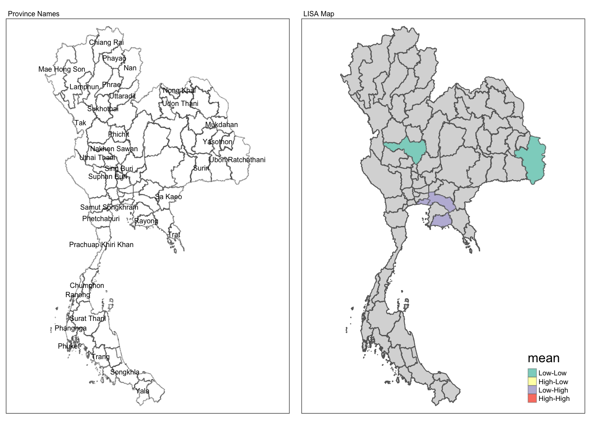
Low-Low (Nakhon Sawan, Roi Et, Ubon Ratchathani): These provinces are classified as “Low-Low,” meaning that they have low values of revenue, and they are surrounded by neighboring provinces that also exhibit low revenue values. This suggests a localized cluster of low revenue in these regions, where both the province and its neighbors show poor performance in generating tourism-related revenue.
Low-High (Rayong, Chachoengsao): These provinces are classified as “Low-High,” meaning that they have relatively low revenue values but are surrounded by provinces with high revenue. This suggests that Rayong and Chachoengsao may be underperforming relative to their neighboring regions, indicating potential issues or challenges in these specific provinces that result in lower tourism revenue compared to nearby areas.
4.2.2 Computing Local Moran’s I for Occupancy Rate
or_local_moranI <- local_moran(agg_tourism_prov$ratio_tourist_stay,
knn,
knn_weights,
nsim = 999)
or_lisa_df <- as.data.frame(or_local_moranI)
or_tourism_lisa <- agg_tourism_prov %>%
mutate(ii = or_lisa_df$ii,
p_ii_sim = or_lisa_df$p_ii_sim,
p_ii = or_lisa_df$p_ii,
mean = or_lisa_df$mean,
.before = 1)Local Moran’s I of Occupancy Rate: Bangkok and Nakhon Ratchasima exhibit the strongest negative spatial autocorrelation for revenue, suggesting they are the spatial outlier in comparison to its neighbors,while the rest of the provinces have values closer to zero. Chiang Rai has the highest positive spatial autocorrelation.
P-value of Local Moran: The p-values of all provinces are not significant, indicating that null hypothesis should not be rejected. For occupancy rate, there is no local spatial autocorrelation.
or_lisa_sig <- or_tourism_lisa %>%
filter(p_ii_sim < 0.05)
tmap_mode("plot")
or_plot4 <- tm_shape(or_tourism_lisa) +
tm_polygons() +
tm_borders(alpha = 0.5) +
tm_layout(
main.title = "LISA Map",
main.title.size = 0.5,
legend.text.size = 0.5) +
tm_shape(or_lisa_sig) +
tm_fill("mean") +
tm_borders(alpha = 0.4)
tmap_arrange(basic,or_plot4)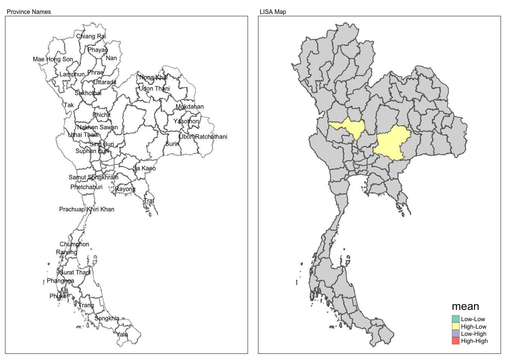
High-Low (Nakhon Sawan, Nakhon Ratchasima): Provinces classified as “High-Low” indicate that these provinces have relatively high occupancy rates, but they are surrounded by provinces with low occupancy rates. This pattern suggests that Nakhon Sawan and Nakhon Ratchasima have stronger hotel occupancy despite being located near provinces where occupancy rates are lower. This could be due to local attractions, tourism infrastructure, or other factors that make these provinces more appealing to tourists, even though neighboring regions are less successful in attracting or accommodating tourists.
4.2.3 Computing Local Moran’s I for Number of Foreign Tourists
ft_local_moranI <- local_moran(agg_tourism_prov$ratio_tourist_stay,
knn,
knn_weights,
nsim = 999)
ft_lisa_df <- as.data.frame(ft_local_moranI)
ft_tourism_lisa <- agg_tourism_prov %>%
mutate(ii = ft_lisa_df$ii,
p_ii_sim = ft_lisa_df$p_ii_sim,
p_ii = ft_lisa_df$p_ii,
mean = ft_lisa_df$mean,
.before = 1)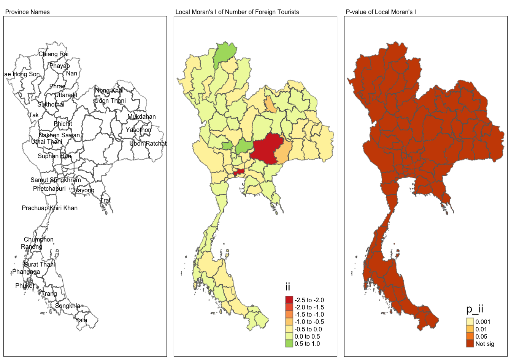
Local Moran’s I of Occupancy Rate: Similarly as occupancy rate, Bangkok and Nakhon Ratchasima exhibit the strongest negative spatial autocorrelation for revenue, suggesting they are the spatial outlier in comparison to its neighbors. Again, Chiang Rai has the highest positive spatial autocorrelation. The rest of the provinces have values closer to zero.
P-value of Local Moran: The p-values of all provinces are not significant, indicating that null hypothesis should not be rejected. For number of foreign tourist, there is no local spatial autocorrelation.
ft_lisa_sig <- ft_tourism_lisa %>%
filter(p_ii_sim < 0.05)
ft_plot3 <- tm_shape(ft_tourism_lisa) +
tm_polygons() +
tm_borders(alpha = 0.5) +
tm_layout(
main.title = "LISA Map",
main.title.size = 0.5,
legend.text.size = 0.5
) +
tm_shape(ft_lisa_sig) +
tm_fill("mean") +
tm_borders(alpha = 0.4)
tmap_arrange(basic,ft_plot3)High-Low (Nakhon Sawan, Nakhon Ratchasima): Same as occupancy rate, this classification indicates that Nakhon Sawan and Nakhon Ratchasima have a high number of foreign tourists relative to its neighboring provinces, which have a lower number of foreign tourists. This could imply that these regioins has a unique attraction or infrastructure that draws foreign tourists, while its neighbors are not as successful in attracting international visitors. This is notable because these two provinces stands out in the region despite a general lack of foreign tourist inflow in nearby provinces.
4.2.4 Interpretation of Strongest Negative & Positive Moran’s I Statistics
Bangkok- Highest Negative For All Indicators
Bangkok has the most negative Local Moran’s I statistic consistently for all three tourism economy indicators suggesting that, despite its high tourism revenue, the spatial pattern of tourism revenue in Bangkok is more out of sync with its neighboring provinces. This could happen for the following reasons:
High Concentration of Tourism Activity: Bangkok’s tourism revenue may be extremely concentrated within a few key areas, while surrounding provinces generate much less revenue. This creates a situation where Bangkok stands out significantly compared to its neighbors, resulting in a negative Local Moran’s I.
Uneven Distribution of Tourism: While Bangkok itself is a tourism hotspot, the neighboring provinces may not benefit equally from the tourism flow, leading to spatial dispersion. This contrast in tourism revenue between Bangkok and its neighbors drives the negative spatial autocorrelation.
Chonburi - Highest Positive Moran’s I for Revenue
Tourism and Economic Hub: Chonburi’s high positive Moran’s I for revenue means that Chonburi, along with its neighboring provinces, is part of a cluster where tourism revenue is consistently high. Chonburi’s strong attractions like Pattaya and its proximity to Bangkok draw significant tourist spending.
Coastal Appeal: Chonburi is a popular destination for both international and domestic tourists, particularly for its beach resorts and recreational activities. This translates into higher spending on hotels, restaurants, and entertainment, contributing to its high tourism revenue (Tourism Authority of Thailand).
Chiang Rai - Highest Positive Moran’s I for Occupancy Rate and Number of Foreign Tourists
Niche International Appeal: Chiang Rai, located in northern Thailand, is less commercially developed compared to Chonburi but has a strong appeal to foreign tourists interested in cultural experiences, eco-tourism, and the scenic landscapes of the Golden Triangle (Betgem, n.d.). This could explain its high positive Moran’s I for the number of foreign tourists. Chiang Rai is often visited by tourists seeking a more tranquil and unique experience compared to the coastal resorts.
High Occupancy Rate: The high Moran’s I for occupancy rate suggests that hotels in Chiang Rai are consistently full compared to surrounding provinces. This could be because Chiang Rai has a more limited supply of accommodations relative to demand, especially during peak travel seasons when foreign tourists flock to the area for cultural and nature-based tourism.
5 Independence of Thailand’s Tourism Economy Indicators from Space and Time : A Pre, During, and Post-COVID Analysis
The tourism economy of Thailand has undergone significant transformations across various temporal phases, particularly pre, during, and post-COVID-19. Before the pandemic, Thailand’s tourism industry flourished, characterized by robust growth and geographical concentration in aforementioned key areas. However, the onset of COVID-19 brought disruptions, leading to a drastic decline in both domestic and international travel, which raised questions about the space and time dependencies of tourism-related indicators. As the world transitions into a post-pandemic phase, the focus shifts towards understanding whether the key indicators of Thailand’s tourism economy, such as foreign visitor numbers, revenue, and the rate of occupancy, are influenced by spatial dimensions and time variables, or if they exhibit independence from these factors. Now that we have uncovered independence of Thailand’s tourism economy with space, this analysis aims to uncover its intricate relationship in both space and time context.
5.1 Splitting the Data : Defining the Temporal Terms
Since our analysis is focused on impact of COVID-19 to the tourism industry in Thailand, we will split the dataset to different temporal terms: pre, during and post COVID-19 to understand the impacts of the pandemic. We determine the splitting points from the viewing the histogram below.
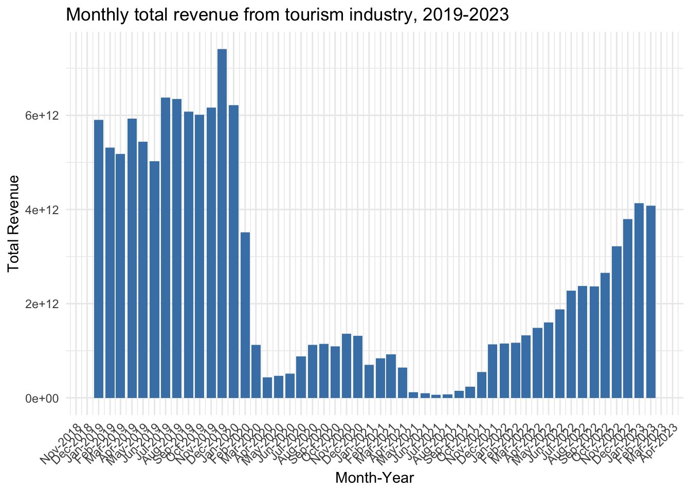
From the histogram, we noted that there are three temporal terms:
Pre Covid: Before Jan 2020 (i.e. Dec 2019 and earlier) aligned with announcement about first few covid cases from Thailand’s Ministry of Public Health (Cheung, 2020)
During Covid: Jan 2020 - Sep 2021
Post Covid: After Sep 2021
Therefore,we will be our splitting our thai_tourism dataframe into these three cross sectional terms to conduct our analysis acrocss.
5.1.1 K-nearest neighbors (KNN) on Temporal Terms
We will now compute the weight matrix for each temporal term with the following steps:
- First, to find centroids, we will aggregate the data; now for both space and time.
agg_tourism_provtime <- thai_tourism %>%
group_by(province_eng, date_int) %>%
summarize(
ratio_tourist_stay = mean(ratio_tourist_stay, na.rm = TRUE),
no_tourist_foreign = sum(no_tourist_foreign, na.rm = TRUE),
revenue_all = sum(revenue_all, na.rm = TRUE),
geometry = st_union(geometry)
)- We will split the aggregated data for each temporal term.
pre_covid <- filter(agg_tourism_provtime, date_int < "202001")
during_covid <- filter(agg_tourism_provtime, date_int >= "202001" & date_int < "202109")
post_covid <- filter(agg_tourism_provtime, date_int >= "202109")- Then we can now compute centroids and KNN for each of the temporal terms subsets using the code chunk below.
We will aggregate the data to find the unique centroids for each temporal term.
pre_covid_agg <- pre_covid %>%
group_by(province_eng) %>%
summarize(
revenue_all = sum(revenue_all, na.rm = TRUE),
ratio_tourist_stay = mean(ratio_tourist_stay, na.rm = TRUE),
no_tourist_foreign = sum(no_tourist_foreign, na.rm = TRUE),
geometry = st_union(geometry)
)
pre_covid_centroids <- pre_covid_agg %>%
st_centroid() %>%
select(province_eng, geometry)
coords_pre_covid <- st_coordinates(pre_covid_centroids)Then compute 6th nearest neighbour distance using KNN approach.
knn_pre_covid <- st_knn(pre_covid_centroids, k = 6)
knn_weights_pre_covid <- st_weights(knn_pre_covid, style = "W")To check whether centroids are appropriate and not in the water, we will visualize them. tmap_mode(‘view’) was used to check carefully but for the purpose of publishing it will now be set as ‘plot’
tmap_mode('plot')
tm_shape(thaibounds) +
tm_fill(col = "lightgrey") +
tm_borders() +
tm_shape(pre_covid_centroids) +
tm_dots(col = "blue", size = 0.2, title = "Province Centroids") +
tm_text("province_eng", size = 0.5, just = "top", col = "black") +
tm_layout(main.title = "Province Centroids of Thai Tourism", main.title.size = 0.5)
during_covid_agg <- during_covid %>%
group_by(province_eng) %>%
summarize(
revenue_all = sum(revenue_all, na.rm = TRUE),
ratio_tourist_stay = mean(ratio_tourist_stay, na.rm = TRUE),
no_tourist_foreign = sum(no_tourist_foreign, na.rm = TRUE),
geometry = st_union(geometry)
)
during_covid_centroids <- during_covid_agg %>%
st_centroid() %>%
select(province_eng, geometry)
coords_during_covid <- st_coordinates(during_covid_centroids)knn_during_covid <- st_knn(during_covid_centroids, k = 6)
knn_weights_during_covid <- st_weights(knn_during_covid, style = "W")tmap_mode('plot')
tm_shape(thaibounds) +
tm_fill(col = "lightgrey") +
tm_borders() +
tm_shape(during_covid_centroids) +
tm_dots(col = "blue", size = 0.2, title = "Province Centroids") +
tm_text("province_eng", size = 0.5, just = "top", col = "black") +
tm_layout(main.title = "Province Centroids of Thai Tourism", main.title.size = 0.5)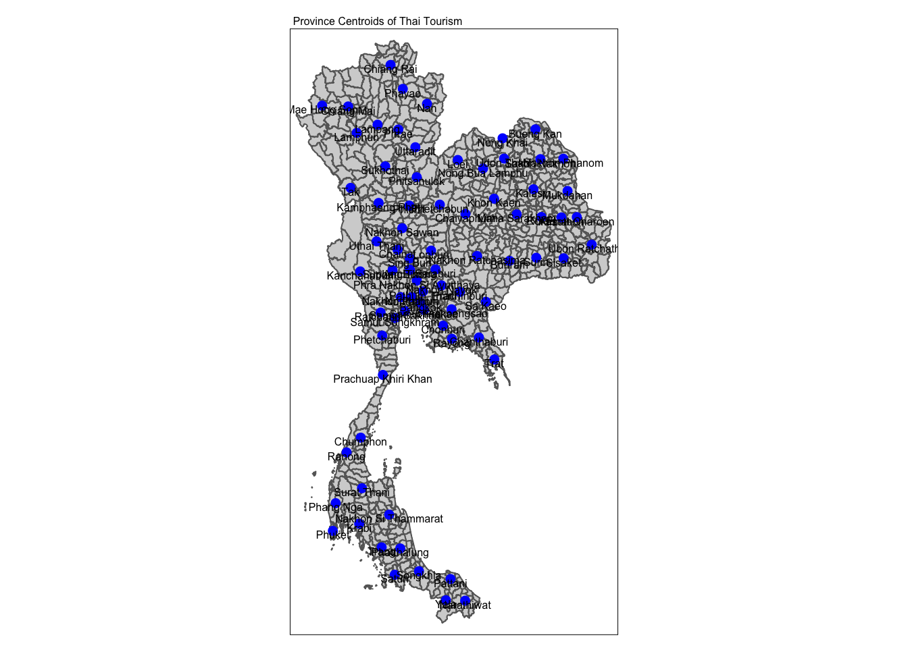
post_covid_agg <- post_covid %>%
group_by(province_eng) %>%
summarize(
revenue_all = sum(revenue_all, na.rm = TRUE),
ratio_tourist_stay = mean(ratio_tourist_stay, na.rm = TRUE),
no_tourist_foreign = sum(no_tourist_foreign, na.rm = TRUE),
geometry = st_union(geometry)
)
post_covid_centroids <- post_covid_agg %>%
st_centroid() %>%
select(province_eng, geometry)
coords_post_covid <- st_coordinates(post_covid_centroids)knn_post_covid <- st_knn(post_covid_centroids, k = 6)
knn_weights_post_covid <- st_weights(knn_post_covid, style = "W")tmap_mode('plot')
tm_shape(thaibounds) +
tm_fill(col = "lightgrey") +
tm_borders() +
tm_shape(post_covid_centroids) +
tm_dots(col = "blue", size = 0.2, title = "Province Centroids") +
tm_text("province_eng", size = 0.5, just = "top", col = "black") +
tm_layout(main.title = "Province Centroids of Thai Tourism", main.title.size = 0.5)
5.2 Total Revenue
5.2.1 Global Spatial Autocorrelation Analysis
We will perform global_moran_perm() test on each of our three temporal terms with 100 Monte Carlo simulations using the code chunks below.
global_moran_perm(pre_covid_agg$revenue_all,
knn_pre_covid,
knn_weights_pre_covid,
nsim = 99)
Monte-Carlo simulation of Moran I
data: x
weights: listw
number of simulations + 1: 100
statistic = -0.024998, observed rank = 11, p-value = 0.22
alternative hypothesis: two.sidedThe slightly negative Moran’s I statistic suggests weak spatial dispersion in tourism revenue, though the magnitude is very close to zero, indicating an almost random distribution.The p-value of 0.22 suggests that we fail to reject the null hypothesis of spatial independence, meaning that the revenue distribution during the pre-COVID period does not show significant spatial autocorrelation.
global_moran_perm(during_covid_agg$revenue_all,
knn_during_covid,
knn_weights_during_covid,
nsim = 99)
Monte-Carlo simulation of Moran I
data: x
weights: listw
number of simulations + 1: 100
statistic = -0.030922, observed rank = 4, p-value = 0.08
alternative hypothesis: two.sidedSimilar to pre-COVID, this negative value suggests weak spatial dispersion, but again, the magnitude is very close to zero, indicating an almost random distribution. The p-value of 0.08, again, suggests that we fail to reject the null hypothesis of spatial independence.
global_moran_perm(post_covid_agg$revenue_all,
knn_post_covid,
knn_weights_post_covid,
nsim = 99)
Monte-Carlo simulation of Moran I
data: x
weights: listw
number of simulations + 1: 100
statistic = -0.0259, observed rank = 15, p-value = 0.3
alternative hypothesis: two.sidedThe results are comparable to those of the pre-COVID period, with a negative Moran’s I statistic indicating spatial dispersion. With the p-value of 0.3, we fail to reject the null hypothesis of spatial independence. This is very similar to the pre-COVID period, with a near-random distribution. The p-value is higher, suggesting even weaker evidence of spatial autocorrelation.
Across all three periods, the consistent negative values of the Moran’s I statistic indicate a trend towards spatial dispersion rather than clustering. The p-values in the all three periods remain above the common significance level (0.05), indicating a lack of evidence to reject the null hypothesis of spatial independence.
Overall, these findings support the conclusion that the revenue variable exhibits independence from space across the specified time periods.
5.2.2 Local Spatial Autocorrelation Analysis
rev_pre_local_moranI <- local_moran(pre_covid_agg$revenue_all,
knn_pre_covid,
knn_weights_pre_covid,
nsim = 999)
rev_pre_lisa_df <- as.data.frame(rev_pre_local_moranI)
rev_pre_tourism_lisa <- pre_covid_agg %>%
mutate(ii = rev_pre_lisa_df$ii,
p_ii_sim = rev_pre_lisa_df$p_ii_sim,
p_ii = rev_pre_lisa_df$p_ii,
mean = rev_pre_lisa_df$mean,
.before = 1)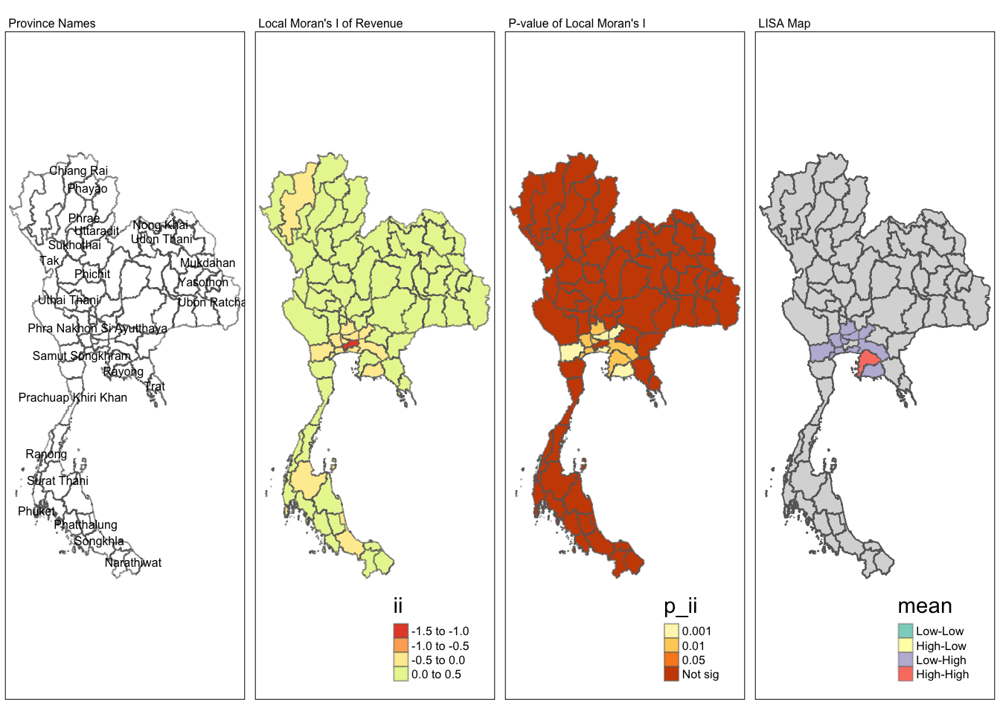
Local Moran’s I:
- Bangkok shows the strongest negative spatial autocorrelation for revenue, identifying it as a spatial outlier compared to its neighboring provinces. This suggests that the revenue generated from tourism in Bangkok is significantly different from adjacent areas.
P-value:
- Most provinces across the country do not show significant spatial autocorrelation. However, several central provinces, such as Samut Prakan, Samut Sakhon, Ratchaburi, Phra Nakhon Si Ayutthaya, Samut Songkhram, Nonthaburi, and Chonburi, have p-values less than 0.05. For these provinces, we reject the null hypothesis, indicating significant local spatial autocorrelation and suggesting that tourism revenue values are spatially clustered in these areas.
LISA Map:
Low-High (Chachoengsao, Nakhon Nayok, Nakhon Pathom, Nonthaburi, Pathum Thani, Phra Nakhon Si Ayutthaya, Ratchaburi, Rayong, Samut Prakan, Samut Sakhon, Samut Songkhram): These provinces are classified as “Low-High,” indicating that their revenue values are low compared to neighboring provinces, which show high revenue. This suggests that while their surrounding areas thrive economically in terms of tourism revenue, these provinces might face specific challenges or structural issues preventing them from benefiting equally from tourism.
High-High (Chonburi): Chonburi is categorized as “High-High,” indicating a cluster of high tourism revenue, both within the province and its neighboring regions. This suggests that Chonburi is a significant tourism hub, not only performing well itself but also likely contributing to the economic strength of surrounding areas.
rev_during_local_moranI <- local_moran(during_covid_agg$revenue_all,
knn_during_covid,
knn_weights_during_covid,
nsim = 999)
rev_during_lisa_df <- as.data.frame(rev_during_local_moranI)
rev_during_tourism_lisa <- during_covid_agg %>%
mutate(ii = rev_during_lisa_df$ii,
p_ii_sim = rev_during_lisa_df$p_ii_sim,
p_ii = rev_during_lisa_df$p_ii,
mean = rev_during_lisa_df$mean,
.before = 1)Local Moran’s I:
- Similar to pre-COVID, Bangkok continues to exhibit the strongest negative spatial autocorrelation, indicating it remains a spatial outlier in terms of tourism revenue. Additionally, some provinces experienced no tourist visits during the pandemic, leading to missing values for those regions.
- Chonburi consistenly has the strongest positive spatial autocorrelation indicating revenue is highly clustered spatially. This means that provinces near Chonburi also tend to have similar high values of tourism revenue. In other words, Chonburi’s neighboring provinces are also performing similarly well in terms of tourism revenue.
P-value:
- The p-values remain consistent with pre-COVID results, with significant local spatial autocorrelation in the central provinces mentioned earlier (Samut Prakan, Samut Sakhon, Ratchaburi, Phra Nakhon Si Ayutthaya, Samut Songkhram, Nonthaburi, and Chonburi). For these provinces, we still reject the null hypothesis, meaning that revenue values remain spatially clustered.
LISA Map:
The pattern of Low-High clusters remains unchanged from the pre-COVID period, with the same provinces (Chachoengsao, Nakhon Nayok, etc.) showing low revenue while surrounded by high-revenue provinces. This continuity may suggest that the COVID-19 pandemic did not drastically change the spatial relationships in revenue across these provinces. The persistence of these clusters indicates that economic disparities in tourism remained stable during the pandemic.
High-High (Chonburi): Like the pre-COVID period, Chonburi maintains its “High-High” status, continuing to be a central hub of tourism activity and revenue, even during the pandemic. This suggests resilience in Chonburi’s tourism sector despite the significant disruptions caused by COVID-19.
post_local_moranI <- local_moran(post_covid_agg$revenue_all,
knn_post_covid,
knn_weights_post_covid,
nsim = 999)
post_lisa_df <- as.data.frame(post_local_moranI)
post_tourism_lisa <- post_covid_agg %>%
mutate(ii = post_lisa_df$ii,
p_ii_sim = post_lisa_df$p_ii_sim,
p_ii = post_lisa_df$p_ii,
mean = post_lisa_df$mean,
.before = 1)Local Moran’s I:
- Bangkok continues to exhibit the strongest negative spatial autocorrelation for revenue, suggesting it remains a spatial outlier compared to its neighboring regions.
- Chonburi continues to exhibit strongest positive spatial autocorrelation.
P-value:
- The post-COVID period shows the same trend as pre- and during-COVID. Significant spatial autocorrelation is observed in the central provinces of Samut Prakan, Samut Sakhon, Ratchaburi, Phra Nakhon Si Ayutthaya, Samut Songkhram, Nonthaburi, and Chonburi, where p-values are below the 0.05 threshold. This indicates that these provinces still exhibit spatial clustering in tourism revenue.
LISA Map:
The Low-High clusters again mirror the previous periods, indicating a prolonged trend of low revenue in these provinces relative to their high-performing neighbors. This suggests that the provinces in this category did not recover or gain the same momentum in tourism revenue as their surrounding regions, even after the pandemic.
High-High (Chonburi): Chonburi continues to be a strong performer in the post-COVID period, indicating sustained high tourism revenue both in the province and its neighbors. This demonstrates the region’s ability to attract tourists and maintain its position as a key tourism destination in Thailand, despite the disruptions from COVID-19.
Across all three periods—pre, during, and post-COVID—the LISA maps reveal a consistent pattern in the spatial autocorrelation of tourism revenue. The Low-High provinces (e.g., Chachoengsao, Nakhon Nayok, and Rayong) show persistent economic underperformance in tourism revenue despite being located near high-revenue provinces. This pattern highlights ongoing economic disparities in tourism performance across these regions. Meanwhile, Chonburi maintains its status as a High-High cluster, resilient even during the pandemic. The consistent LISA patterns suggest that while COVID-19 may have impacted overall tourism activity, the spatial dynamics of tourism revenue remained stable, with the same provinces continuing to underperform or thrive relative to their neighbors.
5.3 Occupancy Rate
5.3.1 Global Spatial Autocorrelation Analysis
global_moran_perm(pre_covid_agg$ratio_tourist_stay,
knn_pre_covid,
knn_weights_pre_covid,
nsim = 99)
Monte-Carlo simulation of Moran I
data: x
weights: listw
number of simulations + 1: 100
statistic = 0.16557, observed rank = 99, p-value = 0.02
alternative hypothesis: two.sidedThe negative Moran’s I statistic indicates a tendency toward spatial dispersion of the ratio_tourist_stay values rather than clustering. The p-value of 0.02 is less than the significance level (0.05), suggesting that we reject the null hypothesis of spatial independence.
global_moran_perm(during_covid_agg$ratio_tourist_stay,
knn_during_covid,
knn_weights_during_covid,
nsim = 99)
Monte-Carlo simulation of Moran I
data: x
weights: listw
number of simulations + 1: 100
statistic = 0.24708, observed rank = 100, p-value < 2.2e-16
alternative hypothesis: two.sidedThe negative value of the Moran’s I statistic once again suggests spatial dispersion. The exceptionally low p-value indicates that there is strong evidence to suggest spatial dependence in the data during the COVID period. The very low p-value suggests that the spatial distribution of occupancy rates is not random. Instead, there is a significant pattern in how occupancy rates are distributed across the provinces.
global_moran_perm(post_covid_agg$ratio_tourist_stay,
knn_post_covid,
knn_weights_post_covid,
nsim = 99)
Monte-Carlo simulation of Moran I
data: x
weights: listw
number of simulations + 1: 100
statistic = 0.21328, observed rank = 100, p-value < 2.2e-16
alternative hypothesis: two.sidedSimilar to the previous periods, the negative Moran’s I statistic indicates spatial dispersion. The very low p-value also suggests that we will reject the null hypothesis of spatial independence. This indicates that the occupancy rates exhibit significant spatial clustering,
Across all three periods, the consistently negative values of the Moran’s I statistic for ratio_tourist_stay imply a trend toward spatial dispersion, rather than clustering. The p-values in the pre-COVID, during COVID, and post-COVID periods all are less the standard significance level (0.05), indicating a evidence to reject the null hypothesis of spatial independence.
The ratio of tourist occupancy rate is dependent on space throughout the specified time periods, showing significant spatial autocorrelation that provinces with high occupancy rates are clustered together.
5.3.2 Local Spatial Autocorrelation Analysis
or_pre_local_moranI <- local_moran(pre_covid_agg$ratio_tourist_stay,
knn_pre_covid,
knn_weights_pre_covid,
nsim = 999)
or_pre_lisa_df <- as.data.frame(or_pre_local_moranI)
or_pre_tourism_lisa <- pre_covid_agg %>%
mutate(ii = or_pre_lisa_df$ii,
p_ii_sim = or_pre_lisa_df$p_ii_sim,
p_ii = or_pre_lisa_df$p_ii,
mean = or_pre_lisa_df$mean,
.before = 1)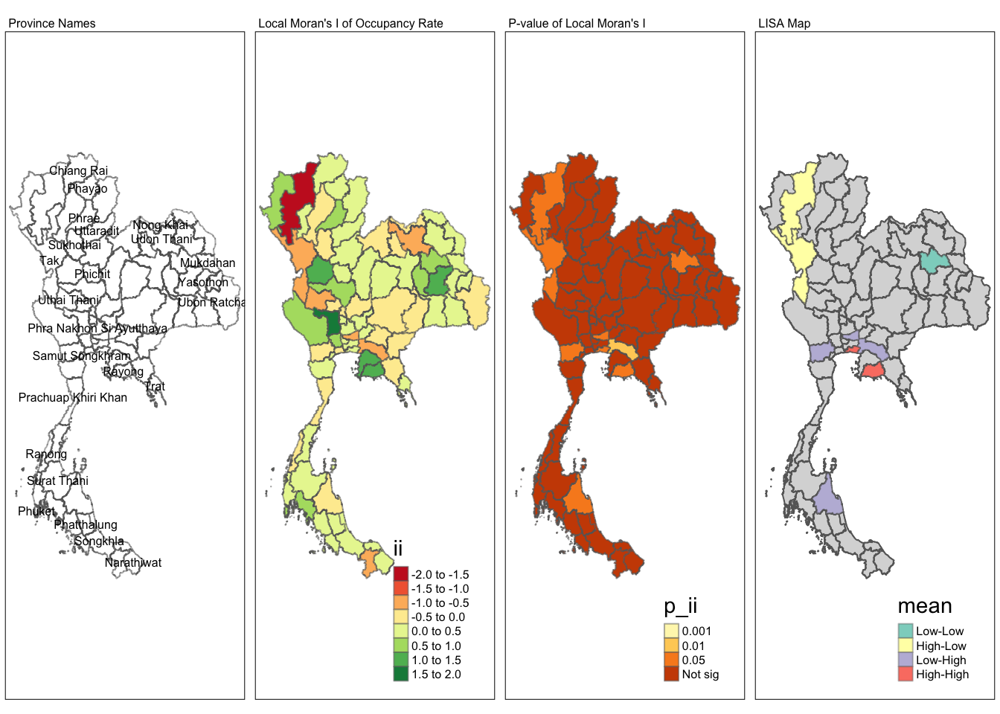
Local Moran’s I:
- Chiang Mai shows the strongest negative spatial autocorrelation for occupancy rate, indicating it is a spatial outlier compared to its neighboring provinces.
P-value of Local Moran:
- The p-values for all provinces are not significant, except for Tak, Rayong, Samut Prakan, Chiang Mai, Ratchaburi, Nakhon Si Thammarat, Pathum Thani, and Kalasin. With a p-value below 0.05, we reject the null hypothesis for these regions, confirming the presence of local spatial autocorrelation. This indicates that similar occupancy rate values are spatially clustered in these regions and its neighboring areas.
LISA Map:
- Low-low(Kalasin): Kalasin exhibits low occupancy rates and is surrounded by other provinces with similarly low rates. This indicates a region that may be facing challenges in attracting tourists, suggesting a potential need for development strategies or marketing efforts to enhance its appeal and occupancy rates.
- High-low(Chiang Mai, Tak): Both Chiang Mai and Tak have high occupancy rates but are surrounded by provinces with low occupancy rates. This suggests that these provinces are successful in attracting tourists independently, but their high occupancy does not influence the neighboring low-occupancy areas. It highlights opportunities for further regional tourism development to connect these successful areas with their less successful neighbors.
- Low-High (Chachoengsao, Nakhon Si Thammarat, Pathum Thani, Ratchaburi): These provinces have low occupancy rates while being surrounded by high occupancy provinces. This situation suggests that they are potentially missing out on tourism opportunities that their successful neighbors enjoy. There may be opportunities for tourism development, promotion, or infrastructure improvement to increase their occupancy rates and tap into the benefits of their geographic location.
- High-High (Rayong, Samut Prakan): Rayong and Samut Prakan have high occupancy rates and are surrounded by other provinces with high occupancy rates. This indicates a strong tourism environment.
or_during_local_moranI <- local_moran(during_covid_agg$ratio_tourist_stay,
knn_during_covid,
knn_weights_during_covid,
nsim = 999)
or_during_lisa_df <- as.data.frame(or_during_local_moranI)
or_during_tourism_lisa <- during_covid_agg %>%
mutate(ii = or_during_lisa_df$ii,
p_ii_sim = or_during_lisa_df$p_ii_sim,
p_ii = or_during_lisa_df$p_ii,
mean = or_during_lisa_df$mean,
.before = 1)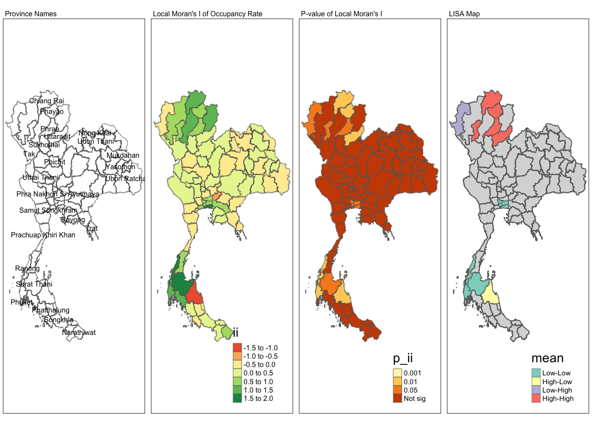
Local Moran’s I:
- Nakhon Si Thammarat exhibit the strongest negative spatial autocorrelation for occupancy rates, indicating that this provinces is a spatial outlier compared to their neighbors.
P-value of Local Moran:
- The p-values are significant for some souther provinces, such as Phang Nga and Surat Thani. With p-values below 0.05, we reject the null hypothesis for these provinces, indicating the presence of local spatial autocorrelation. This suggests that they experienced spatial clustering of occupancy rates, likely forming a high-rate cluster with surrounding provinces.
LISA Map:
- Low-Low (Bangkok, Nonthaburi, Phang Nga, Ranong, Samut Prakan, Surat Thani):The provinces in the Low-Low category, including major urban centers like Bangkok and Nonthaburi, experienced low occupancy rates during COVID. This situation suggests that even populous and popular areas struggled to attract tourists during the pandemic. Factors such as travel restrictions, health concerns, and changes in tourist behavior may have significantly impacted their occupancy levels.
High-Low(Nakhon Si Thammarat): Nakhon Si Thammarat, while having a high occupancy rate, is surrounded by provinces with low occupancy. This suggests that it successfully attracted tourists independently during COVID, potentially due to its local attractions or outdoor tourism opportunities that aligned with pandemic travel preferences. However, the isolation from neighboring low-occupancy provinces indicates that these benefits are not being shared or are not affecting the surrounding areas, meaning there is a potential for developing stronger regional tourism networks.
Low-High( Mae Hong Son): Mae Hong Son is characterized by low occupancy rates but is surrounded by high-occupancy provinces. This indicates a missed opportunity for Mae Hong Son, as it could leverage the tourism successes of its neighbors. The province may need to enhance its visibility and attractiveness to tourists or develop infrastructure to connect better with high-occupancy areas.
High-High (Chiang Rai, Lamphun, Phayao, Phrae, Uttaradit): The provinces in the High-High category experienced high occupancy rates and are surrounded by other high-occupancy provinces. This suggests that these areas formed a robust tourism network. Their success during the pandemic may provide a foundation for future growth, and strategies could be developed to sustain and further enhance tourism in these interconnected areas.
or_post_local_moranI <- local_moran(post_covid_agg$ratio_tourist_stay,
knn_post_covid,
knn_weights_post_covid,
nsim = 999)
or_post_lisa_df <- as.data.frame(or_post_local_moranI)
or_post_tourism_lisa <- post_covid_agg %>%
mutate(ii = or_post_lisa_df$ii,
p_ii_sim = or_post_lisa_df$p_ii_sim,
p_ii = or_post_lisa_df$p_ii,
mean = or_post_lisa_df$mean,
.before = 1)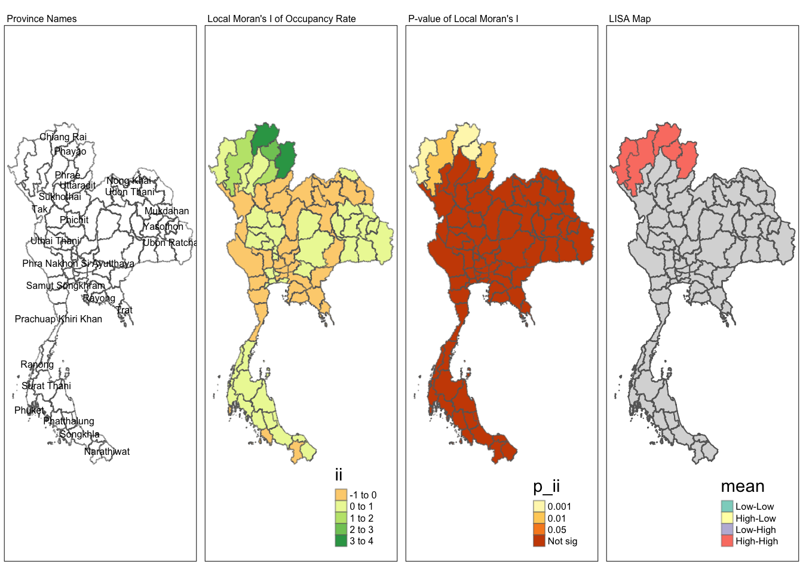
Local Moran’s I:
There is no strongly negative Moran’s I values.
However, Chiang Rai has a strong positive Moran’s I value indicating the neigboring provinces might also have high values of occupancy rates.
P-value of Local Moran:
- The p-values are not significant for most provinces, except for northern provinces like Chiang Mai. We reject the null hypothesis for these provinces as their p-values are below 0.05. This confirms local spatial autocorrelation, indicating spatial clustering of similar occupancy rates in these provinces and their surrounding areas.
LISA Map:
- High-High (Chiang Mai, Chiang Rai, Mae Hong Son, Nan, Phayao): The provinces in the High-High category experienced high occupancy rates and are characterized by strong tourism performance. This suggests that these areas successfully attracted tourists post-COVID. Their status as high-occupancy provinces indicates a robust recovery and possibly a growing appeal as safe travel destinations.
The analysis of occupancy rates across provinces during pre-COVID, during COVID, and post-COVID periods reveals significant trends in tourism dynamics. Pre-COVID, occupancy rates in various provinces were generally robust, driven by strong domestic and international tourism. During COVID, a new pattern emerged, with provinces like Bangkok and Nonthaburi experiencing low occupancy rates due to travel restrictions, while Nakhon Si Thammarat demonstrated a unique resilience with higher occupancy despite neighboring low rates. In the post-COVID landscape, provinces such as Chiang Mai, Chiang Rai, Mae Hong Son, Nan, and Phayao emerged as high performers with strong occupancy rates, likely benefiting from effective recovery strategies.
5.4 Number of Foreign Tourists
5.4.1 Global Spatial Autocorrelation Analysis
global_moran_perm(pre_covid_agg$no_tourist_foreign,
knn_pre_covid,
knn_weights_pre_covid,
nsim = 99)
Monte-Carlo simulation of Moran I
data: x
weights: listw
number of simulations + 1: 100
statistic = -0.014812, observed rank = 50, p-value = 1
alternative hypothesis: two.sidedThe negative Moran’s I statistic indicates a tendency toward spatial dispersion of the number of foreign tourists, suggesting that areas with a high number of foreign tourists are not clustered together. The p-value of 1 is greater than the level of signifcants, therefore we fail to reject null hypothesis of spatial independence.
global_moran_perm(during_covid_agg$no_tourist_foreign,
knn_during_covid,
knn_weights_during_covid,
nsim = 99)
Monte-Carlo simulation of Moran I
data: x
weights: listw
number of simulations + 1: 100
statistic = -0.018951, observed rank = 26, p-value = 0.52
alternative hypothesis: two.sidedAgain, the negative value of the Moran’s I statistic suggests spatial dispersion. The p-value of 0.52 indicates that we also fail to reject the null hypothesis during the COVID period.
global_moran_perm(post_covid_agg$no_tourist_foreign,
knn_post_covid,
knn_weights_post_covid,
nsim = 99)
Monte-Carlo simulation of Moran I
data: x
weights: listw
number of simulations + 1: 100
statistic = -0.022147, observed rank = 18, p-value = 0.36
alternative hypothesis: two.sidedThe negative Moran’s I statistic indicates spatial dispersion, consistent with previous findings. The p-value of 0.36 is also significantly higher than the conventional significance level, leading us to fail to reject the null hypothesis of spatial independence.
Across all three periods, the consistently negative values of the Moran’s I statistic for no_tourist_foreign indicate a trend toward spatial dispersion rather than clustering. The p-values across all peroids all exceed the standard significance level (0.05), indicating a lack of evidence to reject the null hypothesis of spatial independence.
The number of foreign tourists is independent from space throughout the specified time periods, showing no significant spatial autocorrelation.
5.4.2 Local Spatial Autocorrelation Analysis
ft_pre_local_moranI <- local_moran(pre_covid_agg$no_tourist_foreign,
knn_pre_covid,
knn_weights_pre_covid,
nsim = 999)
ft_pre_lisa_df <- as.data.frame(ft_pre_local_moranI)
ft_pre_tourism_lisa <- pre_covid_agg %>%
mutate(ii = ft_pre_lisa_df$ii,
p_ii_sim = ft_pre_lisa_df$p_ii_sim,
p_ii = ft_pre_lisa_df$p_ii,
mean = ft_pre_lisa_df$mean,
.before = 1)Local Moran’s I:
Bangkok shows the strongest negative spatial autocorrelation.
Chonburi has the strongest positive spatial autocorrelation, indicating that Chonburi and its neighboring provinces might be a popular foreign tourist destination.
P-value of Local Moran:
The p-values for all provinces except Nonthaburi, Nakhon Nayok, Samut Sakhon, Chachoengsao, Chonburi, Rayong, Nakhon Pathom, Samut Prakan, Pathum Thani, Phra Nakhon Si Ayutthaya, Ratchaburi, and Samut Songkhram are not significant.
For these 12 provinces, we reject the null hypothesis at the 0.05 significance level, indicating the presence of local spatial autocorrelation. This means that these provinces exhibit significant patterns in foreign tourist numbers, either clustering with similar values or differing significantly from their neighbors.
LISA Map:
Low-High clusters are seen in several provinces, including Nonthaburi, Nakhon Nayok, Samut Sakhon, Chachoengsao, Rayong, and others. This suggests that these provinces experienced lower numbers of foreign tourists compared to their neighbors, possibly due to less developed tourism infrastructure or less attraction to foreign tourists.
High-High clusters are observed in Chonburi and Phra Nakhon Si Ayutthaya, indicating that these provinces had significantly higher foreign tourist numbers, likely due to their established reputation as major tourist destinations.
ft_during_local_moranI <- local_moran(during_covid_agg$no_tourist_foreign,
knn_during_covid,
knn_weights_during_covid,
nsim = 999)
ft_during_lisa_df <- as.data.frame(ft_during_local_moranI)
ft_during_tourism_lisa <- during_covid_agg %>%
mutate(ii = ft_during_lisa_df$ii,
p_ii_sim = ft_during_lisa_df$p_ii_sim,
p_ii = ft_during_lisa_df$p_ii,
mean = ft_during_lisa_df$mean,
.before = 1)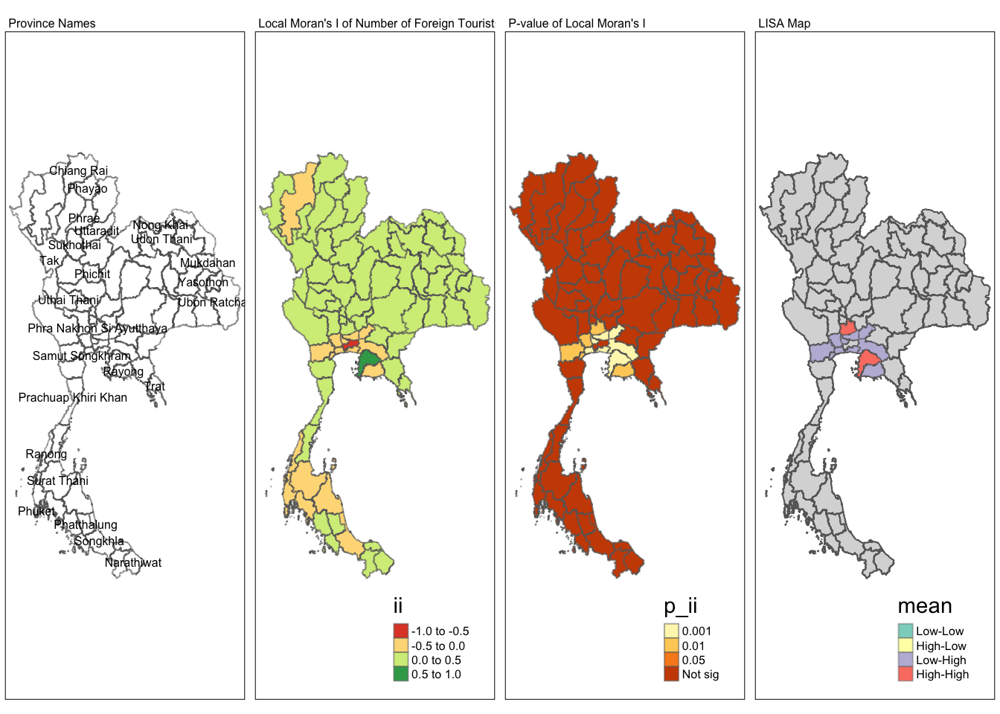
Local Moran’s I:
Similar to the pre-COVID period, Bangkok exhibits the strongest negative spatial autocorrelation.
Chonburi continues to show the strongest positive spatial autocorrelation, implying it maintained higher foreign tourist numbers than surrounding provinces, even during the pandemic.
P-value of Local Moran:
- The significance patterns remain the same, with only the 12 provinces mentioned above showing significant p-values. This suggests that local spatial autocorrelation persists in these areas during the pandemic, indicating that their patterns of foreign tourist distribution remained consistent.
LISA Map:
Many of the same Low-High clusters are still present, such as in Samut Prakan, Samut Songkhram, Chachoengsao, Nakhon Pathom, and others. This suggests that the pandemic did not change the relative distribution of foreign tourists in these areas—they remained low compared to their neighbors.
High-High cluster persists in Chonburi and Phra Nakhon Si Ayutthaya, which likely maintained relatively higher foreign tourist numbers during the pandemic due to its international connections, despite overall global declines in tourism.
ft_post_local_moranI <- local_moran(post_covid_agg$no_tourist_foreign,
knn_post_covid,
knn_weights_post_covid,
nsim = 999)
ft_post_lisa_df <- as.data.frame(ft_post_local_moranI)
ft_post_tourism_lisa <- post_covid_agg %>%
mutate(ii = ft_post_lisa_df$ii,
p_ii_sim = ft_post_lisa_df$p_ii_sim,
p_ii = ft_post_lisa_df$p_ii,
mean = ft_post_lisa_df$mean,
.before = 1)Local Moran’s I:
Once again, Bangkok exhibits the strongest negative spatial autocorrelation.
Chonburi retains the strongest positive spatial autocorrelation, suggesting that even after the pandemic, it has recovered and continues to attract more foreign tourists than neighboring provinces.
P-value of Local Moran:
- Similar to pre- and during-COVID results, only the same 12 provinces have significant p-values. The persistence of this pattern post-COVID indicates that these areas exhibit consistent spatial patterns in foreign tourist numbers, either clustering or diverging from neighboring provinces
LISA Map:
Low-High clusters remain in many of the same provinces as pre- and during-COVID periods, including Pathum Thani, Ratchaburi, Chachoengsao, Samut Prakan, and Nakhon Nayok, indicating continued challenges in attracting foreign tourists in these provinces relative to their neighbors.
High-High cluster in Chonburi remains post-COVID, showing resilience in recovering foreign tourism after the pandemic, likely due to strong international appeal.
Throughout the pre, during, and post-COVID periods, we observe a consistent pattern where Chonburi stands out as a High-High cluster, attracting large numbers of foreign tourists. In contrast, provinces such as Nonthaburi, Samut Prakan, Nakhon Nayok, and Chachoengsao consistently form Low-High clusters, indicating that foreign tourism in these areas has lagged behind their neighbors. The pandemic had a limited impact on shifting these clusters, though foreign tourist numbers likely decreased across the board.
5.5 Overall Results and Policy Suggestions from Space & Time Analysis
The three variables—revenue, occupancy rate, and number of foreign tourists—show consistent patterns of local spatial autocorrelation. Across all three periods, Bangkok consistently shows negative spatial autocorrelation for foreign tourist numbers, suggesting that it stands out among the neighbours. Chonburi, on the other hand, consistently exhibits positive spatial autocorrelation, confirming its strength as a foreign tourist hotspot and maintaining high revenue, occupancy, and foreign tourist numbers across all periods
Although there are some shifts in occupancy rate clusters during the pandemic, the broader spatial patterns remain generally consistent across pre, during, and post-COVID periods.
With these results from the space and time study, the following are some policy suggestions for the sustainability of tourism economy in Thailand.
Targeted Support for Main Tourist Hubs:
Bangkok: Given its persistent negative spatial autocorrelation, although Bangkok has the highest tourism revenue, policymakers should explore why Bangkok consistently stands out and consider targeted strategies, such as infrastructure investment or promotional campaigns, to ensure its tourism sector remains competitive in the neighboring provinces to benefit equally from the tourism flow.
Chonburi: With lots of tourist destinations and beautiful beaches like Pattaya in the Chonburi province, policymakers should maintain and market more attractions in this province.
Pandemic Recovery Support:
- Recovery Plans: During COVID, several provinces saw no tourist activity, which may have resulted in long-term damage to their local economies. A robust recovery plan focused on revitalizing tourism in these regions is essential. Policymakers could introduce incentives like tax breaks for tourism businesses, grants for tourism-related infrastructure, and marketing campaigns to rebuild tourism appeal post-pandemic.
6 Emerging Hotspot Analysis
Having analyzed the spatial autocorrelation of the selected tourism economy indicators, we will now proceed to incorporate temporal trends and conduct an Emerging Hot Spot Analysis. This next phase aims to identify dynamic patterns in tourism data, revealing how hot spots and cold spots evolve over time. By integrating both spatial and temporal dimensions, we can gain deeper insights into the factors influencing tourism trends and their implications for economic development.
6.1 Method Overview
Emerging Hot Spot Analysis (EHSA) is a comprehensive approach to understanding spatial patterns by incorporating temporal trends, revealing how hot spots (areas with high values) and cold spots (areas with low values) evolve over time. Below are the primary steps and methodology for this analysis:
Building a Space-Time Cube
The first step in EHSA is constructing a space-time cube, which organizes spatial data by time slices (bins). Each location in the spatial dataset is represented by a series of time-stamped values, creating a 3D structure. This cube allows for the simultaneous analysis of both spatial and temporal dimensions, capturing how a phenomenon changes over time across different locations. In this analysis, each time slice corresponds to a specific period (month-year for our case), and the values at each location represent the attribute being studied (e.g., tourist revenue, occupancy rate, number of foreign tourists).Calculating the Getis-Ord Gi Statistic*
Once the space-time cube is built, the Getis-Ord Gi* statistic is computed for each bin (location at a specific time). This statistic measures the degree to which high or low values cluster spatially. By applying an FDR (False Discovery Rate) correction, the analysis adjusts for multiple testing, ensuring that the identification of significant hot spots and cold spots is statistically valid.Evaluating Hot and Cold Spot Trends Using the Mann-Kendall Trend Test
To assess how these hot and cold spots evolve over time, the Mann-Kendall trend test is applied to the space-time cube data. This non-parametric test evaluates whether there is a statistically significant upward or downward trend in the hot or cold spot patterns over the period analyzed. The test helps determine whether the spatial clusters of high or low values are increasing, decreasing, or remaining stable over time.Categorizing Study Area Locations
Based on the trend analysis, each study area location is categorized according to its temporal trend. This categorization is achieved by combining the z-scores and p-values from both the Mann-Kendall trend test and the Getis-Ord Gi* statistic. Locations are classified depending on whether the clusters of high or low values show significant changes over time. The categorization highlights areas with growing or fading clusters.
6.1 Computing Gi* Statistics
We will need to derive a spatial weight matrix before we can compute local Gi* statistics using the include_self() code below.
Although we used KNN for spatial autocorrelation analysis to capture relationships among a fixed number of neighboring provinces, inverse distance weights are appropriate for emerging hotspot analysis because this method captures the spatial decay of influence, where closer locations have a stronger impact on each other than those further apart. By using inverse distance weighting, we account for the fact that the influence of one region on another diminishes with increasing distance, reflecting a more realistic spatial interaction model. This approach allows us to better identify emerging hotspots where tourism dynamics are more likely influenced by nearby regions, providing a better understanding of how tourism patterns evolve over time in relation to spatial proximity.
The following code chunk will be used to identify neighbors and to derive an inverse distance weights matrix.
tourism_nb <- tourism_spt %>%
activate("geometry") %>%
mutate(neighbours = include_self(st_knn(geometry, k = 6)), # Find 6 nearest neighbors and include self
weights = st_inverse_distance(neighbours, geometry, scale = 1, alpha = 1),
.before = 1) %>%
set_nbs("neighbours") %>%
set_wts("weights")write_rds(tourism_nb, "data/rds/tourism_nb.rds")tourism_nb <- read_rds("data/rds/tourism_nb.rds")activate(“geometry”): The
activate()function from thedplyrpackage is used to activate the geometry context within thetourism_sptobject. This focuses the operations on the spatial (geometric) data rather than the temporal data.mutate(): Within the geometry context, two new columns,
neighboursandweights, are created:neighbours: The
include_self()function is used withst_knn(geometry).st_knn()is used here because it ensures that each spatial feature (province) has a fixed number of neighbors, regardless of the geographic distribution of the data.weights: The
st_inverse_distance()function computes inverse distance weights for the neighbors using thenbcolumn andgeometry. These weights are scaled by a factor of 1, and the distance is raised to the power ofalpha(which is set to 1).
set_nbs(“neighbours”) and set_wts(“weights”): After activating the data context again (automatically done by
%>%), theset_nbs()andset_wts()functions are used to copy over the neighbours and weights columns to each time slice of the spatio-temporal data.
We can use these new columns to calculate the local Gi* for each location for each of the tourism economy indicators. We can do this by grouping by date_int and using local_gstar_perm() of sfdep package. Finally, we will use unnest() to unnest gi_star column of the newly created gi_starts data.frame.
rev_gi_stars <- tourism_nb %>%
group_by(date_int) %>%
mutate(gi_star = local_gstar_perm(
revenue_all, neighbours, weights)) %>%
tidyr::unnest(gi_star)or_gi_stars <- tourism_nb %>%
group_by(date_int) %>%
mutate(gi_star = local_gstar_perm(
ratio_tourist_stay, neighbours, weights)) %>%
tidyr::unnest(gi_star)ft_gi_stars <- tourism_nb %>%
group_by(date_int) %>%
mutate(gi_star = local_gstar_perm(
no_tourist_foreign, neighbours, weights)) %>%
tidyr::unnest(gi_star)6.2 Mann-Kendall Test
The Mann-Kendall test is a non-parametric statistical method commonly used in time series analysis to detect trends in data, making it particularly useful in the context of EHSA. It is applied to evaluate the significance of trends in hot spots or cold spots, helping determine whether these patterns are random or systematic.
The following is the hypothesis we would like to test:
Null hypothesis(H0): There is no trend in the data, meaning the observed values are independent and randomly ordered.
Alternative hypothesis (H1): A trend exists (either positive, negative, or non-null)
Rejecting the null hypothesis indicates the presence of a significant trend, either positive (increasing over time) or negative (decreasing over time).
6.2.1 Revenue
bkk_rev <- rev_gi_stars %>%
ungroup() %>%
filter(province_eng == "Bangkok") |>
select(province_eng, date_int, gi_star)Initial Increase: The Gi values start around 4 and goes slightly higher, suggesting this is a periods where tourism revenue patterns are higher in Bangkok. This could indicate that certain regions of the city were performing well in terms of earning revenue from tourism.
Sharp Drop to Negative Values (Mid-2021): Around mid-2021 (07-11), the Gi* statistic drops sharply to a Gi value of 2.5. This indicates the revenue was significantly lower than before. This sharp decline correlates with the COVID-19 and the resulting lowest point of tourism revenue.
Slow Recovery (2022 onwards): The Gi* statistic sharply rises back up into 2022. Although the Gi* statistic stays below 5 (what it used to be pre-covid) for some time, there is an upward trend. This may reflect a slow recovery in revenue as tourism and business travel began to resume. Going into 2023, it has recovered back beyond 5.
bkk_rev %>%
summarise(mk = list(
unclass(
Kendall::MannKendall(gi_star)))) %>%
tidyr::unnest_wider(mk)# A tibble: 1 × 5
tau sl S D varS
<dbl> <dbl> <dbl> <dbl> <dbl>
1 -0.174 0.0762 -213 1225 14292.In the results, sl is the p-value. Since it is slightly greater than our level of significance (0.05), we fail to reject they null hypothesis for Bangkok. There is no trend in the data, meaning the observed values are independent and randomly ordered.
cbr_rev <- rev_gi_stars %>%
ungroup() %>%
filter(province_eng == "Chonburi") |>
select(province_eng, date_int, gi_star)Initial Trend: The Gi values starts lower than revenue, around 4, suggesting this is a periods where tourism revenue patterns are like pre covid in Chonburi. This could indicate that Chonburi has slighly weaker hotspots and stronger clustering of high values in certain areas compared to Bangkok.
Sharp Drop to Negative Values (Mid-2021): Around mid-2021 (07), the Gi* statistic drops sharply to a Gi value of 1.5. This indicates the revenue was significantly lower than before, similar to Bangkok.
Slow Recovery (2022 onwards): The Gi* statistic sharply rises back up into 2022 with higher Gi* statistic than pre-covid. This may reflect a faster recovery in revenue as tourism and business travel began to resume in Chonburi than in Bangkok.
cbr_rev %>%
summarise(mk = list(
unclass(
Kendall::MannKendall(gi_star)))) %>%
tidyr::unnest_wider(mk)# A tibble: 1 × 5
tau sl S D varS
<dbl> <dbl> <dbl> <dbl> <dbl>
1 -0.0824 0.403 -101 1225 14292.Since p-value is greater than our level of significance (0.05), we also fail to reject they null hypothesis for Chonburi. This means that there is the no presence of a significant trend.
We can also see the results of the all provinces by using group_by() as in the code chunk below.
allprov_rev <- rev_gi_stars %>%
group_by(province_eng) %>%
summarise(mk = list(
unclass(
Kendall::MannKendall(gi_star)))) %>%
tidyr::unnest_wider(mk)
head(allprov_rev)# A tibble: 6 × 6
province_eng tau sl S D varS
<chr> <dbl> <dbl> <dbl> <dbl> <dbl>
1 Amnat Charoen -0.205 0.0365 -251 1225 14292.
2 Ang Thong 0.0302 0.763 37 1225 14292.
3 Bangkok -0.174 0.0762 -213 1225 14292.
4 Bueng Kan -0.133 0.175 -163 1225 14292.
5 Buriram -0.0498 0.616 -61 1225 14292.
6 Chachoengsao -0.174 0.0762 -213 1225 14292.Then , we can sort this dataframe to see significant emerging hot/cold spots.
emerging_rev <- allprov_rev %>%
arrange(sl, abs(tau)) %>%
slice(1:10)
head(emerging_rev)# A tibble: 6 × 6
province_eng tau sl S D varS
<chr> <dbl> <dbl> <dbl> <dbl> <dbl>
1 Nakhon Si Thammarat -0.540 0.0000000337 -661 1225 14292.
2 Nan 0.461 0.00000238 565 1225 14292.
3 Phatthalung -0.450 0.00000421 -551 1225 14292.
4 Chumphon -0.429 0.0000117 -525 1225 14292.
5 Chiang Rai 0.373 0.000136 457 1225 14292.
6 Narathiwat -0.365 0.000191 -447 1225 14292.sl (p-values):
6 provinces, namely Nakhon Si Thammarat, Nan, Phatthalung,Chumphon, Chiang Rai, Narathiwat, Pattani, Yala, Phayao, and Mae Hong Son, are the top hotspot/coldspot provinces in terms of total revenue generated from tourism.
Provinces with very small sl values (e.g. Nan) indicate high statistical significance, suggesting that the observed trend is unlikely to be due to random variation.
Provinces with higher absoulate tau values (e.g. Nakhon Si Thammarat) indicate stronger trend whether it is decreasing or increasing.
Tau values:
Negative tau values (e.g., Nakhon Si Thammarat, Phatthalung, and Chumphon) suggest a decreasing trend in tourism revenue. Their hot spots are becoming weaker or less frequent over time.
Positive tau values (e.g., Nan and Chiang Rai) indicate an increasing trend, meaning that these provinces are potential hotspots for development since there has been growth in tourism revenue overtime.
6.2.2 Occupancy Rate
the province that has the strongest negative local autocorrelation consistently
bkk_or <- or_gi_stars %>%
ungroup() %>%
filter(province_eng == "Bangkok") |>
select(province_eng, date_int, gi_star)Initial Positives: The Gi values start around 2 or slightly higher, suggesting that we can see some patterns of temporal clustering (periods where occupancy rates are higher precovid), meaning areas in Bangkok had significantly higher occupancy rates than expected based on the overall distribution. This could indicate that certain regions of the city were performing well in terms of hotel occupancy before the pandemic.
Sharp Drop to Negative Values (Mid-2020): Unlike revenue which only decreased sharply in 2021, for occupancy rate, the Gi* statistic drops sharply to negative values, close to -2 around mid-2020. This indicates the emergence of cold spots, where the occupancy rate was significantly lower than expected. This sharp decline correlates exactly with the COVID-19 timeline and the resulting collapse in tourism and hospitality demand, leading to widespread low occupancy in Bangkok hotels.
Slow Recovery (2021 onwards): The Gi* statistic gradually rises from the negative values during late 2021 and into 2022. Although the Gi* statistic stays below 0 for some time, the upward trend suggests a weakening of cold spots. This may reflect a slow recovery in occupancy rates as tourism and business travel began to pick up post-pandemic, but the values remain below their pre-pandemic levels.
bkk_or %>%
summarise(mk = list(
unclass(
Kendall::MannKendall(gi_star)))) %>%
tidyr::unnest_wider(mk)# A tibble: 1 × 5
tau sl S D varS
<dbl> <dbl> <dbl> <dbl> <dbl>
1 -0.313 0.00140 -383 1225 14292.Since p-value is less than our level of significance, we will reject the null hypothesis for Bangkok, indicating that there is might be montonic trend in the data.From the tau value we see that the temporal trend is negative over the period of 2019 to 2023. If the tau is negative in conjunction with Gi* statistics, it could imply that there is a decline in spatial clustering of high occupancy rates over time.
the province that has the strongest positive local autocorrelation pre-covid
kk_or <- or_gi_stars %>%
ungroup() %>%
filter(province_eng == "Khon Kaen") |>
select(province_eng, date_int, gi_star)Initial Negatives: The Gi values start around -2 and not passing 0 , suggesting that Khon Kaen is already identified as a cold spot, where the measured variable occupancy rate is significantly lower than in surrounding areas pre covid.
Increase to Positive Values (2020-2021): The sharp increase in Khon Kaen’s Gi* statistic during 2020–2021 could indicate that while the province may not have seen substantial growth, its performance relative to surrounding regions improved significantly, likely due to the uneven impacts of COVID-19. Major tourist hubs suffered more during this period, while smaller or less tourist-reliant provinces like Khon Kaen may have experienced less negative impact, leading to a positive spatial clustering of values.
Sharp drop (mid-2021) and Recovery (2022 onwards): The Gi* statistic drops again mid 2021 as with Bangkok. After an initial adjustment to COVID-19, 2021 could have brought new challenges as lockdowns and restrictions continued or were reinstated. This could have impacted local businesses, occupancy rates, and tourism again, causing a temporary decline in the Gi* statistic.
kk_or %>%
summarise(mk = list(
unclass(
Kendall::MannKendall(gi_star)))) %>%
tidyr::unnest_wider(mk)# A tibble: 1 × 5
tau sl S D varS
<dbl> <dbl> <dbl> <dbl> <dbl>
1 0.0873 0.375 107 1225 14292.Since p-value is greater than our level of significance, we fail to reject the null hypothesis for Khon Kaen, there is no montonic trend.
the province that has the strongest positive local autocorrelation post-covid
cr_or <- or_gi_stars %>%
ungroup() %>%
filter(province_eng == "Chiang Rai") |>
select(province_eng, date_int, gi_star)Initial Negatives: The Gi values start around 2 and stays below 0 initially , suggesting that Chiang Rai is might have seasonality trends, where the measured variable occupancy rate is significantly lower than in surrounding areas. It only increases back in December to positive values.
Sharp drop (mid-2021): The sharp decrease in Chiang Rai’s Gi* statistic during 2020–2021. This drop in occupancy rate is seen throughout the other provinces so it may be due to new lockdowns and restrictions.
Recovery (2022 onwards): After the one month of drop in April 2021, The Gi* statistic drastically increases again into 2023 unlike Khon Kaen, much higher than the initial pre-covid time. This means that hotspots are beginning to emerge in Chiang Rai quickly.
cr_or %>%
summarise(mk = list(
unclass(
Kendall::MannKendall(gi_star)))) %>%
tidyr::unnest_wider(mk)# A tibble: 1 × 5
tau sl S D varS
<dbl> <dbl> <dbl> <dbl> <dbl>
1 0.584 0 715 1225 14292.Since p-value is less than our level of significance, we will reject the null hypothesis for Chiang Rai as well, indicating that there is might be montonic trend in the data. From the tau value we see that the temporal trend is positive over the period of 2019 to 2023. The tau value of Chiang Rai is much higher than that of Khon Kaen, implying that there is an increase in spatial clustering of high occupancy rates and it is growing over time in Chiang Rai.
Now we view the emerging hotspots.
#|echo: False
allprov_or <- or_gi_stars %>%
group_by(province_eng) %>%
summarise(mk = list(
unclass(
Kendall::MannKendall(gi_star)))) %>%
tidyr::unnest_wider(mk)
head(allprov_or)# A tibble: 6 × 6
province_eng tau sl S D varS
<chr> <dbl> <dbl> <dbl> <dbl> <dbl>
1 Amnat Charoen -0.208 0.0336 -255 1225 14292.
2 Ang Thong -0.512 0.000000164 -627 1225 14292.
3 Bangkok -0.313 0.00140 -383 1225 14292.
4 Bueng Kan 0.167 0.0879 205 1225 14292.
5 Buriram 0.311 0.00148 381 1225 14292.
6 Chachoengsao -0.373 0.000137 -457 1225 14292.emerging_or <- allprov_or %>%
arrange(sl, abs(tau)) %>%
slice(1:10)
head(emerging_or)# A tibble: 6 × 6
province_eng tau sl S D varS
<chr> <dbl> <dbl> <dbl> <dbl> <dbl>
1 Nan 0.540 0 661 1225 14292.
2 Chiang Rai 0.584 0 715 1225 14292.
3 Suphan Buri -0.543 0.0000000279 -665 1225 14292.
4 Phayao 0.528 0.000000119 647 1225 14292.
5 Ang Thong -0.512 0.000000164 -627 1225 14292.
6 Chainat -0.497 0.000000366 -609 1225 14292.sl (p-values):
10 provinces, namely Nan, Chiang Rai, Suphan Buri, Chiang Rai, Phayao, Ang Thong, Chainat, Nakhon Pathom, Samut Songkhram, Samut Sakhon and Chiang Mai, are the top hotspot/coldspot provinces in terms of tourist occupancy rate.
Provinces with very small sl values (e.g., Nan and Chiang Rai) indicate high statistical significance, suggesting that the observed trend is unlikely to be due to random variation.
Tau values:
Negative tau values (e.g., Suphan Buri, Ang Thong, Chainat, Nakhon Pathom, Samut Songkhram, Samut Sakhon) suggest a decreasing trend in the occupancy rate.Their hot spots are becoming weaker over time.
Positive tau values (e.g., Chiang Mai, Phayao, Nan and Chiang Rai) indicate an increasing trend, meaning that these provinces are potential hotspots for development of hotels, motels and other tourist infratstructure since there has been growth in tourism occupancy.
6.2.3 Number of Foreign Tourists
the province that has the strongest negative local autocorrelation consistently
bkk_ft <- ft_gi_stars %>%
ungroup() %>%
filter(province_eng == "Bangkok") |>
select(province_eng, date_int, gi_star)Initial Increase: The Gi values start at a high value of around 5 and goes slightly higher, suggesting this is a periods where patterns of foreign tourist are higher in Bangkok. This could indicate that certain regions of the city were tourist attractions.
Sharp Drop to Negative Values (Mid-2021): Around September 2021, the Gi* statistic drops sharply to a Gi value of 4. This indicates the number of tourists was significantly lower than before. This sharp decline correlates with the COVID-19 and the resulting lowest point of foreign tourist arriving in Bangkok.
Fast Recovery (2022 onwards): The Gi* statistic sharply rises back up by November 2021. The Gi* statistic went back to its original status at around 5.5 meaning that Bangkok has fully recovered and welcoming foreign tourists as usual or even more than usual.
bkk_ft %>%
summarise(mk = list(
unclass(
Kendall::MannKendall(gi_star)))) %>%
tidyr::unnest_wider(mk)# A tibble: 1 × 5
tau sl S D varS
<dbl> <dbl> <dbl> <dbl> <dbl>
1 0.140 0.155 171 1225 14292.Since p-value is greater than our level of significance, we fail to reject the null hypothesis for Bangkok, there is no montonic trend.
cbr_ft <- ft_gi_stars %>%
ungroup() %>%
filter(province_eng == "Chonburi") |>
select(province_eng, date_int, gi_star)Gradual Decline: The Gi values start at a high value of around 4 and gradually decreases even pre-covid suggesting this is a periods where patterns of foreign tourist are high but getting lower in Chonburi.
Sharp Drop to Negative Values (Mid-2021): Around September 2021, the Gi* statistic drops sharply to a Gi value of 2 as with Bangkok. This indicates the number of tourists was significantly lower than before in this specific month which may be due to COVID-19 restrictions.
Fast Recovery (2022 onwards): The Gi* statistic sharply rises back up by November 2021. Then the Gi* statistic went back to its original status at around 4.2 meaning that Chonburi also has fully recovered and welcoming foreign tourists.
cbr_ft %>%
summarise(mk = list(
unclass(
Kendall::MannKendall(gi_star)))) %>%
tidyr::unnest_wider(mk)# A tibble: 1 × 5
tau sl S D varS
<dbl> <dbl> <dbl> <dbl> <dbl>
1 -0.306 0.00176 -375 1225 14292.Since p-value is less than our level of significance, we will reject the null hypothesis for Chonburi indicating that there is might be montonic trend in the data. From the tau value we see that the temporal trend is negative over the period of 2019 to 2023, suggesting that there might me a decreasing trend of foreign tourist visitng Chonburi.
Now we view the emerging hotspots.
# A tibble: 6 × 6
province_eng tau sl S D varS
<chr> <dbl> <dbl> <dbl> <dbl> <dbl>
1 Amnat Charoen 0.125 0.204 153 1225 14292.
2 Ang Thong -0.0188 0.854 -23 1225 14292.
3 Bangkok 0.140 0.155 171 1225 14292.
4 Bueng Kan 0.273 0.00521 335 1225 14292.
5 Buriram 0.169 0.0849 207 1225 14292.
6 Chachoengsao 0.143 0.146 175 1225 14292.emerging_ft <- allprov_ft %>%
arrange(sl, abs(tau)) %>%
slice(1:10)
head(emerging_ft)# A tibble: 6 × 6
province_eng tau sl S D varS
<chr> <dbl> <dbl> <dbl> <dbl> <dbl>
1 Trat -0.406 0.0000334 -497 1225 14292.
2 Chanthaburi -0.383 0.0000905 -469 1225 14292.
3 Prachuap Khiri Khan -0.378 0.000111 -463 1225 14292.
4 Rayong -0.360 0.000233 -441 1225 14292.
5 Chumphon -0.355 0.000283 -435 1225 14292.
6 Nong Khai 0.327 0.000820 401 1225 14292.sl (p-values):
10 provinces, namely Trat, Chanthaburi, Prachuap Khiri Kahn,Rayong, Chumphon, Nong Khai, Udon Thani, Phatthalung, Chonburi, and Sakhon Nakhon, are the top hotspot/coldspot provinces in terms of foreign tourist visitors.
Provinces with very small sl values (e.g., Trat and Chanthaburi) indicate high statistical significance, suggesting that the observed trend is unlikely to be due to random variation.
Tau values:
Negative tau values (e.g., Trat, Chanthaburi, Prachuap Khiri Kahn,Rayong, Chumphon,Phatthalung, and Chonburi) suggest a decreasing trend in the number of tourist visitors likely since they are already coldspots.
Positive tau values (e.g., Sakhon Nakhon, Udon Thani and Nong Khai) indicate an increasing trend, meaning that these provinces are potential hotspots for foreign visitors.
6.3 Performing Emerging Hotspot Analysis
Since we have observed Gi* statistics, we will now perform EHSA analysis by using emerging_hotspot_analysis() of sfdep package with the code chunk below.
rev_ehsa <- emerging_hotspot_analysis(
x = tourism_spt,
.var = "revenue_all",
k = 1,
nsim = 99
)write_rds(rev_ehsa, "data/rds/rev_ehsa.rds")rev_ehsa <- read_rds("data/rds/rev_ehsa.rds")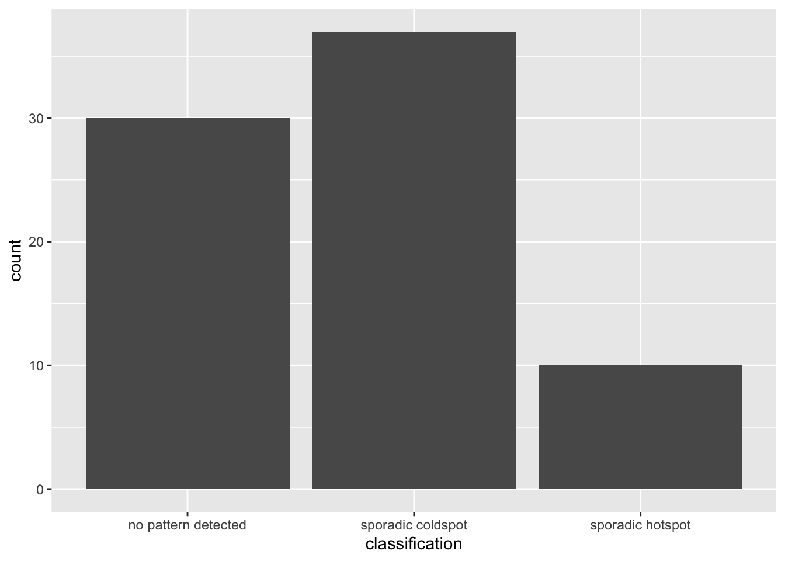
Sporadic cold spots: There are 36 provinces, including Amnat Charoen, Bueng Kan, Chumphon, Phatthalung, and Surat Thani, which are characterized by fluctuating patterns of cold spots. These provinces experienced periods where tourism revenue was significantly lower than expected, but these cold spots were not consistent over time. The sporadic nature of cold spots suggests that while there are dips in revenue, they are not long enough to show a consistent downward trend.
Sporadic hot spots: Only 9 provinces, such as Bangkok, Chonburi, and Phuket, were identified as sporadic hot spots. These provinces had periods of significantly higher tourism revenue, but these peaks were inconsistent. The “on-again, off-again” nature of these hot spots might reflect seasonal tourism fluctuations or external factors such as short-term policy changes, events, or market dynamics that temporarily boosted tourism in these areas.
No pattern detected: A total of 32 provinces, such as Ang Thong, Khon Kaen, and Rayong, showed no clear spatial pattern in tourism revenue. This suggests that tourism revenue in these provinces did not follow any detectable trend, either positive or negative, over 2019-2023. These provinces may be subject to a range of influences that prevent clear emerging patterns from forming or may not have much tourist activities.
or_ehsa <- emerging_hotspot_analysis(
x = tourism_spt,
.var = "ratio_tourist_stay",
k = 1,
nsim = 99
)write_rds(or_ehsa, "data/rds/or_ehsa.rds")or_ehsa <- read_rds("data/rds/or_ehsa.rds")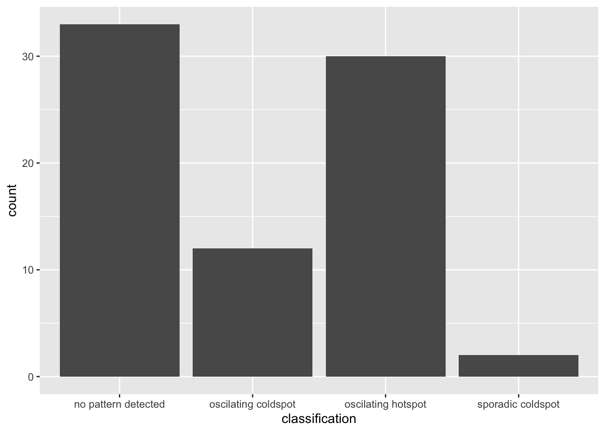
Oscillating hotspots: A total of 33 provinces, including Chiang Mai, Nakhon Phanom, and Prachuap Khiri Khan, were identified as oscillating hotspots. These provinces experienced recurring periods where occupancy rates were significantly higher than expected, indicating a consistent rebound in demand for accommodations. The oscillating nature of these hotspots suggests that while there are strong peaks in occupancy rates, these trends are followed by periods of lower demand, likely driven by seasonal tourism, festivals, or regional events that create fluctuations in visitor numbers.
Oscillating cold spots: 10 provinces, such as Nonthaburi, Pathum Thani, and Samut Sakhon, were marked as oscillating cold spots. These areas consistently saw periods of lower-than-expected occupancy rates, yet these patterns were not sustained over time. The intermittent nature of these cold spots may reflect localized challenges or temporary downturns in tourism, but without indicating a long-term decline in accommodation demand.
Sporadic cold spots: Two provinces, Chanthaburi and Ranong, were classified as sporadic cold spots. In these areas, there were brief periods of significantly lower occupancy rates, but these cold spots did not persist long enough to suggest an enduring downward trend in tourism-related accommodation. These provinces may have experienced temporary challenges that caused short-term dips in accommodation demand.
No pattern detected: A large number of provinces, 33 in total, such as Bangkok, Krabi, Suphan Buri, and Ang Thong, showed no significant spatial pattern in occupancy rates. This lack of detectable trends indicates that these provinces do not follow a consistent trajectory of either increased or decreased accommodation demand over time. The absence of clear patterns suggests that these areas might be subject to a variety of influencing factors, such as unpredictable shifts in local tourism, preventing clear hotspots or cold spots from emerging.
ft_ehsa <- emerging_hotspot_analysis(
x = tourism_spt,
.var = "no_tourist_foreign",
k = 1,
nsim = 99
)write_rds(ft_ehsa, "data/rds/ft_ehsa.rds")ft_ehsa <- read_rds("data/rds/ft_ehsa.rds")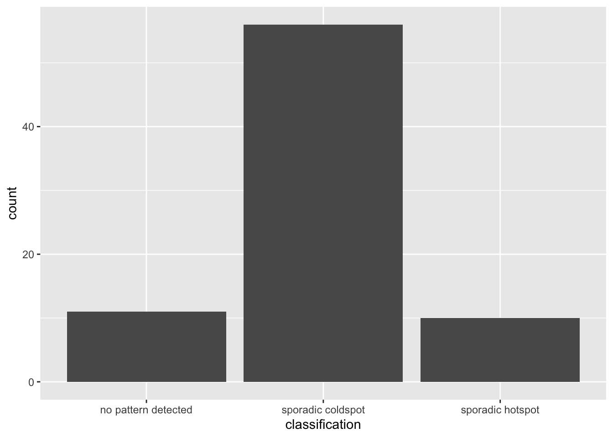
Sporadic cold spots: A large number of provinces (47 out of 77), including Amnat Charoen, Bueng Kan, Chaiyaphum, and Surat Thani, were identified as sporadic cold spots. These provinces experienced fluctuations in foreign tourist numbers, with periods where tourist arrivals were significantly lower than expected. However, these cold periods were not consistent enough to show a long-term decline in foreign tourist activity.
Sporadic hot spots: Only 12 provinces, such as Bangkok, Chonburi, and Krabi, were classified as sporadic hot spots. These provinces saw intermittent peaks in foreign tourist numbers, suggesting short-term boosts possibly driven by seasonal events, marketing campaigns, or other external factors. These increases were not sustained over time, resulting in an on-and-off pattern rather than continuous growth in foreign tourist arrivals.
No pattern detected: Some provinces, such as Chiang Rai, Trat, and Satun, showed no statistically significant spatial pattern for foreign tourists, indicating that these areas had neither sustained periods of higher nor lower foreign tourist activity. This lack of consistent trends might suggest that foreign tourist numbers in these provinces are more random or influenced by a wide range of uncontrollable variables.
6.4 Visualizing Emerging Hotspot Analysis
rev_ehsa_joined <- thaibounds %>%
left_join(rev_ehsa,
by = join_by(province_eng == location))or_ehsa_joined <- thaibounds %>%
left_join(or_ehsa,
by = join_by(province_eng == location))ft_ehsa_joined <- thaibounds %>%
left_join(or_ehsa,
by = join_by(province_eng == location))rev_ehsa_sig <- rev_ehsa_joined %>%
filter(p_value < 0.05)
or_ehsa_sig <- or_ehsa_joined %>%
filter(p_value < 0.05)
ft_ehsa_sig <- ft_ehsa_joined %>%
filter(p_value < 0.05)
tmap_mode("plot")
rev_map <- tm_shape(rev_ehsa_joined) +
tm_polygons() +
tm_borders(alpha = 0.5) +
tm_shape(rev_ehsa_sig) +
tm_fill("classification") +
tm_borders(alpha = 0.4) +
tm_layout(title = "Revenue EHSA",
title.size = 0.4,
legend.text.size = 0.4,
legend.title.size = 0.4)
or_map <- tm_shape(or_ehsa_joined) +
tm_polygons() +
tm_borders(alpha = 0.5) +
tm_shape(or_ehsa_sig) +
tm_fill("classification") +
tm_borders(alpha = 0.4) +
tm_layout(title = "Occupancy Rate EHSA",
title.size = 0.4,
legend.text.size = 0.4,
legend.title.size = 0.4)
ft_map <- tm_shape(ft_ehsa_joined) +
tm_polygons() +
tm_borders(alpha = 0.5) +
tm_shape(ft_ehsa_sig) +
tm_fill("classification") +
tm_borders(alpha = 0.4) +
tm_layout(title = "Foreign Tourist EHSA",
title.size = 0.4,
legend.text.size = 0.4,
legend.title.size = 0.4)
tmap_arrange(rev_map, or_map, ft_map, ncol = 3)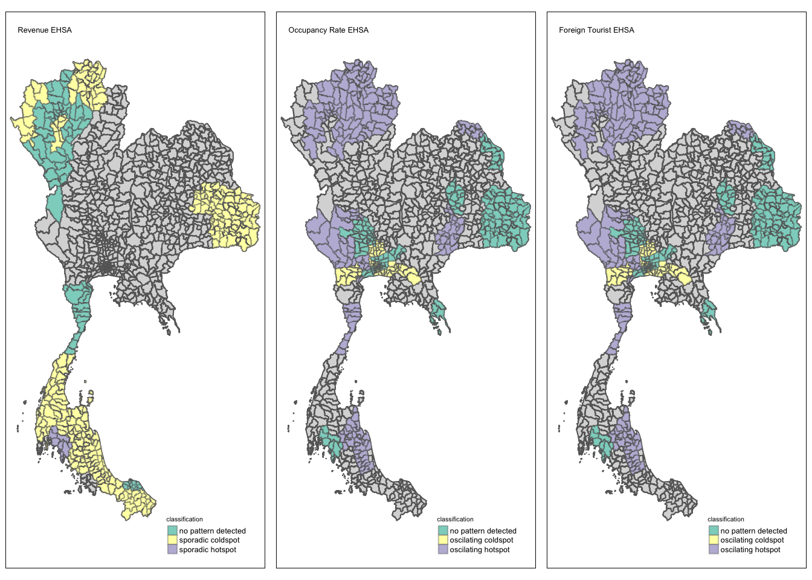
Chonburi stands out as a consistent hotspot across all variables, indicating strong tourism development and economic benefits.
Other interesting provinces are the following:
Phang Nga:
Revenue: Identified as a coldspot.
Occupancy Rate: Identified as a coldspot.
Number of Foreign Tourists: Identified as a hotspot.
Observation: While Phang Nga has a significant number of foreign tourists, it is classified as a coldspot for both revenue and occupancy rate. This could suggest that while many foreign tourists visit, their spending is lower compared to other provinces.
Krabi:
Revenue: Identified as a coldspot.
Occupancy Rate: Identified as a coldspot.
Number of Foreign Tourists: Identified as a hotspot.
Observation: Similar to Phang Nga, Krabi has a high number of foreign tourists but is a coldspot in terms of revenue and occupancy rate, indicating potential issues in capitalizing on foreign tourist visits.
Bangkok:
Revenue: Identified as a coldspot.
Occupancy Rate: Identified as a hotspot.
Number of Foreign Tourists: Identified as a hotspot.
Observation: Bangkok shows a strong presence in foreign tourists and occupancy rates but is a coldspot in revenue, suggesting a discrepancy between visitor numbers and overall economic impact.
7 Conclusion
In conclusion, this study aimed to explore the spatial and spatio-temporal dependencies of key indicators within Thailand’s tourism economy. By preparing comprehensive geospatial data layers at the provincial level, including a dedicated focus on Bangkok, we were able to analyze the relationships between tourism indicators and their geographic contexts. Using various methods from the sfdep package, we conducted global and local spatial autocorrelation analyses alongside emerging hotspot detection. The findings revealed significant clusters and outliers in tourism indicators, highlighting regions of high and low economic activity. Notably, Chonburi emerged as a consistent hotspot across revenue, occupancy rates, and foreign tourist numbers, while other provinces, despite their appeal in one economic indicator like number of foreign tourists, exhibited discrepancies in another such as revenue generation. These insights provide a deep understanding of Thailand’s tourism dynamics across time and provinces.
References
Betgem, F. (n.d.). Things to do in the Golden Triangle. Chiang Mai a la Carte. Retrieved October 7, 2024, from https://www.chiangmai-alacarte.com/chiangmai-alacarte/things-to-do/things-to-do-in-the-golden-triangle/
Cheung, Elizabeth (13 January 2020). “Thailand confirms first case of Wuhan virus outside China”. South China Morning Post. Archived from the original on 13 January 2020. Retrieved 29 September 2024.
Tourism Authority of Thailand. (n.d.). Chon Buri: Destinations & attractions. Tourism Thailand. Retrieved October 3, 2024, from https://www.tourismthailand.org/Destinations/Provinces/Chon-Buri/464